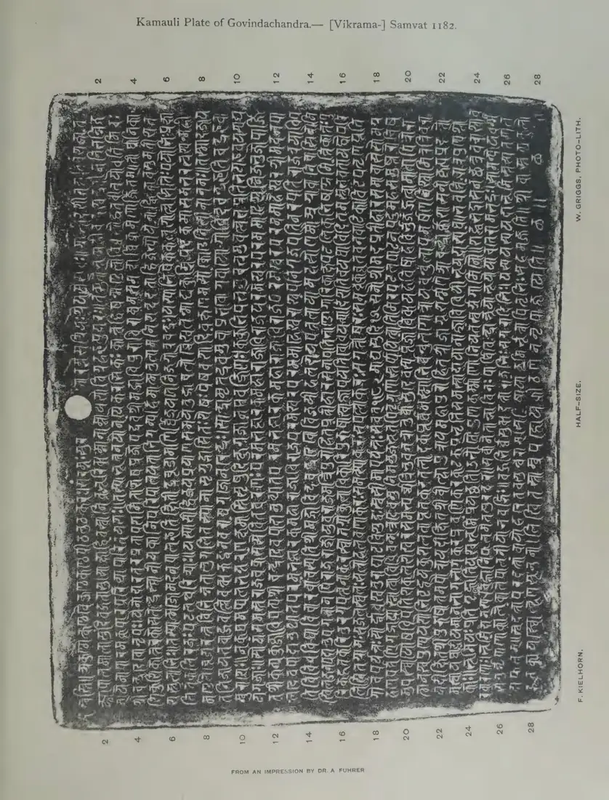

Twenty-one copper-plates of the kings of Kanauj ; [Vikrama-]Saṅvat 1171 to 1233
TWENTY-ONE COPPER-PLATES OF THE KINGS OF KANAUJ;
[VIKRAMA-]SAMVAT 1171 TO 1233.
[VIKRAMA-]SAMVAT 1171 TO 1233.
By F. KIELHORN, PH.D., LL.D., C.I.E.; GÖTTINGEN.
The twenty-one plates of which, at Dr. Hultzsch's request, I furnish the following account, are said to have been found,1 together with four other copper-plate inscriptions,2 in October 1892 in the village of Kamauli, near the confluence of the Barnâ and the Ganges at Benares; and they are now deposited in the Provincial Museum at Lucknow. My account of them is based on excellent impressions which have been kindly supplied by Dr. A. Führer.
Fourteen3 of these plates (A. to N.) contain grants of the king Gôvindachandra of Kanauj, the earliest of which is of [Vikrama-]Samvat 1171 and the latest of [Vikrama-]Samvat 1211. One (O.) is a grant of Gôvindachandra's son, the king Vijayachândra, and his son, the Yuvarâja Jayachchandra, dated in [Vikrama-]Samvat 1224. And the remaining six (P. to U.) are grants of the king Jayachchandra, dated between [Vikrama-]Samvat 1226 and 1233. I have treated of these grants in their chronological order, except that I have begun my account of them with a grant of Gôvindachandra's of [Vikrama-]Samvat 1182, which seemed to me to be the most carefully written and engraved of his grants, and the one most suitable for photographing. Of this grant (A.) I have given the full text; of ten other grants of Gôvindachandra I have only given that part of the text4 which commences with the words -śrīmad-Gôvindachandradévô vijayî, because up to these words the text of all these inscriptions essentially agrees5 with the text of A.; and of the three remaining grants of Gôvindachandra (G., I. and L.) I have considered it sufficient to give a summary of the contents only, because the names of the localities mentioned in them are either quite illegible or very doubtful, and because the grants (excepting the dates, the exact words of which I have given in footnotes,) contain therefore really nothing that is not known to us from some of the other grants. Of the inscription of Vijayachandra (O.), of whom only one other copper-plate inscription has been hitherto published,6 I have
1 See Ep. Ind. Vol. II. p. 347.
2 Three of these (a grant of Vaidyadêva, king of Kâmarûpa; a grant of the Mahârâjaputra Gôvindachandra of Kanauj of [Vikrama-]Samvat 1162; and one of the king Gôvindachandra of [Vikrama-]Samvat 1196) have already been published by Mr. A. Venis, ibid. p. 347 ff. And the fourth, a grant of the Singara Vatsarâja, of the reign of Gôvindachandra, of [Vikrama-]Samvat 1191, I shall edit below, p. 130 ff.
3 Among these is one grant, F., of [Vikrama-]Samvat 1176, which was made, with Gôvindachandra's consent, by his chief queen Nayanakêlidêvî.
4 But of the benedictive and imprecatory verses, occurring in each inscription, I have thought it sufficient to give merely the commencement of each verse, in the footnotes.
5 Of the inscriptions of Gôvindachandra, here treated of, the grant A., of [Vikrama-]Samvat 1182, is the earliest grant which contains the epithets of the king asvapatigajapatinarapatirâjatrayâdhipati-vividhavidyâvichâra-Vâchaspati.
6 The Royal As. Soc.'s plate of Vijayachandra and the Yuvarâja Jayachchandra, published in Ind. Ant. Vol. XV. p. 7.
given the full text, omitting only the benedictive and imprecatory verses, the publication of which, owing to the slovenly way in which they are written and engraved, would have necessitated more footnotes than the verses deserve. The six grants of Jayachchandra (P. to U.) I have treated like the inscriptions F. to K. of the same king, of which I have given an account in the Indian Antiquary, Vol. XVIII. p. 134 ff. To translate (or re-publish here my translation of) any part of these inscriptions appeared to me unnecessary; but I have endeavoured to include in my introductory remarks everything that might be considered of importance.
Our inscription B., of [Vikrama-]Samvat 1171, is the earliest known inscription in which Gôvindachandra is described as reigning sovereign;1 and the last inscription of Gôvindachandra here treated of, N., of [Vikrama-]Samvat 1211, is about eleven years and six months later than the latest inscription of the same king2 of which an account has yet been published. The inscription of the reign of Vijayachandra, O., of [Vikrama-]Samvat 1224, apparently precedes by about seven months the only other known grant of the same king's reign.3 And for the king Jayachchandra we obtain from the inscription P., of [Vikrama-]Samvat 1226, the very day of his inauguration ceremony, corresponding to the 21st June A.D. 1170.4 Beyond these dates these new inscriptions contain nothing of historical importance that was not known before;5 but they give us the names of a large number of villages and districts which, together with the names of localities occurring in the previously published inscriptions of the same dynasty, and in others which are known to exist but have not yet been published, may furnish the material for a separate paper.
All these inscriptions record grants of land. In no less than ten cases the donations were made in favour of the king's Purôhita or Mahápurôhita Jâgûśarman,6 a son of the Dîkshita7 Vîlhâ8 and grandson of the Dîkshita Purushôttama or, as he also is called, Purâsa, of the Bandhula gôtra; and six grants were made to Jâgûśarman's son, the Mahápurôhita Praharâjaśarman (Paharâjaśarman or Prahlâdaśarman), who had a share also in two other grants. One donation (H.) was made to Vyâsa, apparently a brother of Jâgûśarman; one (M.) to the Pandita Mahârâjaśarman, apparently a brother of Praharâjaśarman; and one (J.) to the Râuta Jâtêśarman of the Gôbhila gôtra.
Eight grants were made at the time of full-moon (one, A., at a lunar eclipse, and three, B., I. and S., on a Manvâdi9); three at the time of new-moon (one, F., at a solar eclipse, and one, D., at the annual śrâddha in honour of Gôvindachandra's father); two (C. and U.) on Vaisâkhasudi 3, the Akshaya-tritîyâ (Trétâyugâdi, Kalpâdi); one (Q.) was made on the mahâ-saptamî (ratha-saptamî), Mâgha-sudi 7, termed Manvantarâdi; one (J.) on Bhâdra-sudi 3 (also a
1 The three inscriptions of [Vikrama-]Samvat 1161, 1162 and 1166, published in Ind. Ant. Vol. XIV. p. 103, Ep. Ind. Vol. II. p. 359, and Ind. Ant. Vol. XVIII. p. 15, are of the reign of Gôvindachandra's father Madanapâla, and Gôvindachandra is described in them as Mahârâjaputra.
2 The 'Gagnâ' plates of [Vikrama-]Samvat 1199, Ind. Ant. Vol. XVIII. p. 20. I possess a rough rubbing of a copper-plate inscription of Gôvindachandra and his queen Gôsaladêvî, which is dated in [Vikrama-]Samvat 1208; see ibid. Vol. XIX. p. 367, No. 184.
3 See ibid. Vol. XV. p. 7.
4 The date of the latest known inscription of Jayachchandra corresponds to the 14th June A.D. 1187; see ibid. Vol. XIX. p. 37, No. 69.
5 The inscription F., of [Vikrama-]Samvat 1176, gives us the name of Gôvindachandra's chief queen, Nayanakêlidêvî; K., of [Vikrama-]Samvat 1198, that of his mother, Râlbadêvî, which was known before; and T., of [Vikrama-]Samvat 1232, that of Jayachchandra's son, Harischandra, which also was already known.
6 In the inscription T. he is called Yâjñavalkya.
7 This word is explained to denote persons who or whose ancestors have performed a great sacrificial ceremony, such as a jyôtishtôma.
8 This Vîlhâ (who is called Vêdaśarman in P., and Vishṇuśarman in T.) is the donee of the grant of [Vikrama-]Samvat 1162, published in Ep. Ind. Vol. II. p. 359, where he is called Vîlhâka; and his son Jâgûśarman is the donee of the grant of [Vikrama-]Samvat 1196, published itîd. p. 361.
9 piz: Kârttika-sudi 15, termed Manrâdi in I.
Manvádi); one (O.) on Āsháðha-sudi 10 (also a Manvádi), on the occasion of Jayachchandra's initiation as a Vaishnava; one (G.) on Kárttika-sudi 9 (the Kritayugádí); one (T.) on Bhádravadi 8 (the Kṛishṇajanmáshṭamī), at the performance of the játa-karman of the prince Harishchandra; two (K. and L.) were made (on Phálguna-vadi 1) 'on the day of the great queen,' Gövindachandra's mother Rálhadévi; and one (P.) was made (on Āsháðha-sudi 6) at the abhishéka of Jayachchandra.—All the dates1 contain sufficient details for verification; sixteen of them are regular, and five (of A., B., E., G. and S.) irregular.
Like other inscriptions of the same dynasty, these grants contain a number of revenue terms, some of which are obscure. Thus we have bhágabhógakara in every one of the twenty-one grants, pravaṇikara in nineteen grants, turushkadaṇḍa in seven, kumaragadiáṇaka in six, hiraṇya in five, kúṭaka in three (A., C. and I.), játakara and gókara only in O., nidhinikshépa only in R., and yamalikambali only in U.
A.— PLATE OF GÖVINDACHANDRA OF [VIKRAMA-]SAMĖAT 1182.
This is a single plate, which measures about 1' 4" broad by 1' high, and is engraved on one face only. In the upper part it has a ring-hole, about in diameter. The plate contains 28 lines of well engraved writing which is in a perfect state of presérvation. The size of the letters is between and . The characters are Nágarí, and the language is Sanskrit. As regards orthography, the letter b is denoted by the sign for v everywhere except in the word babhramur, l. 10; the dental sibilant is employed instead of the palatal in paramésvara, l. 12, and Sanau, l. 18; and the word támra is written támvra, in line 28. The inscription opens with nine well known verses which invoke the blessing of the goddess Śrí, and give the genealogy of the donor; and it ends with five benedictive and imprecatory verses, and another verse which gives the name of the writer of this támra-paṭta. The formal part of the grant, from line 11 to line 23, is in prose, and is worded like most of the published grants of the same dynasty.2
The inscription is one of the Paramabhaṭtáraka Mahárájádhirája Paramésvara Gövindachandradéva, the successor of the P.M.P. Madanapáladéva, who was the successor of the P.M.P. Chandradéva, 'who by his arm had acquired the sovereignty over Kanyakubja (Kanauj).' The king records in it that, while in residence at Madapratihāra (or Apratihāra),3 on the occasion of a lunar eclipse on Saturday, the 15th of the bright half of Mágha of the year 1182 (given in decimal figures only), after bathing in the Ganges, he granted the village of Mahasônamaua in the Haladôya pattalá to the Mahápurôhita Jágùśarman, son of the Díkshita Vílhâ, and son's son of the Díkshita Purushôttama, (a Brâhmaṇ) of the Bandhula gótra, whose three pravaras were Bandhula, Aghamarshaṇa and Viśvāmitra.—The taxes specially mentioned (in line 23) as due to the donee under this grant are the bhágabhógakara, pravaṇikara and kúṭaka. The grant was written by Kithaṇa, a son of the Káyastha Ulhaṇa, of the Vâstavya or Śrívâstavya family.4
The date is irregular. The 15th tithi of the bright half of Mágha of Vikrama-Samvat 1182 expired5 ended about sunrise of the 11th January A.D. 1126, when there was a lunar eclipse which was visible in India; but the day was a Monday, not a Saturday.
1 The inscriptions S. and T. contain postscripts with a separate date, from which it appears that the plates were engraved three or four years after the grant was made.
2 Compare, for both the introductory verses and the formal part of the grant, Ind. Ant. Vol. XV. p. 8 ff., and Vol. XVIII. p. 12 ff. and p. 132 ff.; and Jour. As. Soc. Beng. Vol. LVI. Part i. p. 110 ff.
3 See the note on the text, line 18.
4 See Ind. Ant. Vol. XVII. p. 63, note 24.
5 There also was a lunar eclipse on Mágha-sudi 15 of Vikrama-Samvat 1182 current =Wednesday, the 21st January A.D. 1125, but that eclipse took place 8 h. 42 m. after mean sunrise and was therefore not visible in India.
. The localities I am unable to identify. The Haladóya pattalá is also mentioned in a grant of Gövindachandra's of [Vikrama-]Samvat 1182, Mágha-vadi 6, Journal As. Soc. of Bengal, Vol. XXVII. p. 243.
TEXT.1
1 Óm2 svasti || 3Akunthôtkantha-Vaikuntha-kanthapítha-luthat-karah |
samrambhah surat-árambhê sa Śriyah śrêyasê=stu vah || [1*] 4Āsíd=
Āsítadyuti-varśa-játa-.
2 kshmápála-málásu divan=gatásu5 | sákshád=Vivasván=iva bhûri-dhámnâ nâmnâ.
Yasôvigraha ity=udárah || [2*] 6Tat-sutô=bhûn=Mahichandras=chandra-dhâma-
nibhan=nija-.
3 m | yên=ápáram=akúpára-párê7 vyápáritam yaśah || [3*] 8Tasy=ábhút=tanayô
nay-aika-rasikah krânta-dvishan-maṇdalô vidhvast-ôddhata-dhíta(ra)-yôdha-9
timirah .
4 śrí-Chandradêvô nripah | yên=ôdáratara-pratâpa-samit-ásésha-prajôpadravarí
śrímad-Gâdhipur-âdhirájyam=asaman=dôr-vvikramên=árjjitam || [4*] Tírthâni10
Kâ-.
5 śi-Kuśik-Ôttarakôsal-Êndrasthâniyakâni paripálayat=ábhigamya11 | hêm=âtma-
tulyam=aniśan=dadatâ dvijêbhyô yên=ânkitâ vasumatí śata-.
6 śas=tulâbhiḥ || [5*] Tasy=âtmajô Madanapála iti kshitindra-chûđâmanir=
vvijayatê nija-gôtra-chandrah | yasy=ábhishêka-kalas-ôllasitaiḥ payôbhiḥ
prakshâ-.
7 litam kali-rajaḥ-patalan=dharitryâḥ || [6*] 12Yasy=ásíd=vijaya-prayâna-samayê
tung-áchal-ôchchais-chalan-mádyat-kumbhi-pada-kram-ásama-bhara-bhraśyan-máhí-.
8 mandalê | 13chûđáratna-vibhinna-tálu-galita-styân-ásřig-udbhásitaḥ Séshah pésha-
vasád=iva14 kshanam=asau krôdê nilín-ánanaḥ || [7*] 15Tasmád=ajáya-.
9 ta nij-áyata-vâ(bâ)huvalli-va(ba)ndh-â[va*]ruddha-nava-rájyagajô narêndraḥ |
sândr-âmřita-drava-muchâm prabhavô gavâm yô Gövindachandra iti chandra
iv=â-.
10 mvu(mbu)ráséḥ || [8*] Na16 katham=apy=alabhanta raṇa-kshamârns=tisřishu
dikshu gajân=atha Vajriṇah | kakubhi babhramur=Abhramuvallabha-pratibhatâ
iva yasya gha-.
11 tâ-gajâḥ || [9*] Sô=yam samasta-rája-chakra-sarnsêvita-charaṇah17
paramabhattâraka-mahârájádhirája-paramêsvara-paramamâhêsva[ra*]-nijabhujôpárjji-.
12 taśríKanyakuvjâ(bjâ)dhipatya-śríChandradeva-pâdânudhyâta-paramabhattâraka-
mahârájádhirája-paramêsva(śva)ra-paramamâhêsvara-śríMadanapá-
ladêva-pâdânudhyâta-paramabhattâraka-mahârájádhirája-paramêsvara-paramamâhêsva-ra-
ásvapani(ti)gajapatinarapatirájatrayâdhipa-.
1 From impressions supplied by Dr. Führer.
2 Expressed by a symbol.
3 Metre: Slôka (Anushtubh).
4 Metre: Indravajrâ.
5 The sign for the akshara ṅga here and below does not really differ from the sign for dga.
6 Metre: Slôka (Anushtubh).
7 Originally -parē appears to have been engraved.
8 Metre: Sârdúlavikríðita.
9 Of the inscriptions here published, D., I., K., L. and O. have vtra-yódha instead of dhtra-yódha.
10 Metre of verses 5 and 6: Vasantatilakâ.
11 Of the inscriptions here published, only U. and perhaps O. have =ádhigamya, instead of =ábhigamya.
12 Metre: Sârdúlavikríðita.
13 Originally °ratta- was engraved.
14 All the new inscriptions have this or some modification of it; but I have no doubt that the reading intended by the author of the verse is Séshah śaisha-vaádd=iva, as was first suggested by me in Ind. Ant. Vol. XV. p. 12, note 97.
15 Metre: Vasantatilakâ.
16 Metre: Drutavilambita.
17 Other inscriptions insert here the words sa cha.
Plate 1 is bound after this page.
14 ti-vividhavidyâvichâra Vâchaspati-śrīmad-Gôvindachandradêvô vijayî Haladôya-pattalâyâm Mahasônamaua-grâvâ(ma)-nivâsinô mi(ni)-
15 khila-janapadân=upagatân=api [cha*] râja-râjñî-yuvarâja-mantri-purôhita-pratîhâra-sênâpati-bhândâgârik-âkshapatalika-bhishag-nê(nai)mittik-ântaħpu-
16 rika-dûta-karituragapattanâkarasthânagôkulâdhikâri-p u r u s h â m ś = c h = â j ñ â p a y a t i1 vô(bô)dhayaty=âdiśati cha yathâ viditam=astu bhavatâm yadv(th)=ôpari-
17 likhita-grâmah sa-jala-stħalaħ sa-lôha-lavan-âkarah sa-matsy-âkarah sa-parnn-âkarah sa-gartt-ôsharah sa-madhûka-chûta-vana-vâțikâ-viṭapa-triṇa-yûti-
18 gôcha[ra*]-paryantah s-ôrddh[v*]-âdhaś=chatur-âghâṭa-viśuddhaħ sva-sîmâ-paryantah samvat 1182 Mâgha-sudi 15 Sa(śa)nau 2śrīmadapratîhâra-samâvâsê sômagra-
19 haṇa-paryvaṇi Gañgâyâm snâtvâ vidhivan=mantra-dêva-muni-manuja-bhûta-pitri-gaṇâms=tarppayitvâ timira-paṭala-pâṭana-padu(ṭu)-mahasam=Ushṇarôchisha-
20 m=upasthây=Aushadhipati-śakala-sêkharam samabhyarchchya tribhuvana-trâtur= Vvâsudêvasya pûjâm vidhâya havishâ havirbhujam hutvâ. mâtâpitrôr=â-
21 tmanaś=cha punya-yasô-bhivrīdva(ddha)yê kuśalatâ-pûta-karatal-ôdaka-pûrvvam=asmâbhir=Va(bba)ndhula-gôtrâya Va(ba)ndhul-Âghamarshaṇa-Viśvâmitra-tri[pra*]varâ-
22 ya dîkshita-śrī-Purushôttama-pautrâya dîkshita-śrī-Vîlhâ-putrâya mahâpurôhita-śrī-Jâgûśarmmaṇê3 â-chandr-ârkkam śâsanîkrîtpa(tya) prâdantô(ttô)
23 matvâ yathâdîyamâna-bhâgabhôgakara-pravanikara-kûṭaka-prabhriti-samast-âdâyân=âjñâvidhi(dhê)yîbhûya dâsyatha || Bhavanti ch=âtra punya-ślô-
24 kâħ || Bhûmim4 yaħ pratigrîhṇâti yaś=cha bhûmim prayachchhati | ubhau tan punya-karmmâṇau ñiyatam svargga-gâminau || Śañkham bhadr-âsanam chchha(chha)ttram var-âśvâ va-
25 ra-vâraṇâħ | bhûmi-dânasya chihnâni phalam=êtat=Purandara || 6Sarvvân=êtân=bhâvinaħ pârthiv-êndrân=bhûyô bhûyô yâchatê Râmabhadraħ | sâm[â*]nyô=yam dharmma-
26 sêtur=nnrīpâṇâm kâlê kâlê pâlanîyô bhavadbhiħ || 6Va(ba)hubhir=vvasudhâ dattâ râjabhih Sagar-âdibhih | yasya yasya yadâ bhûmis=tasya tasya ta-
27 dâ phalam || Sva-dattâm para-dattâm vâ yô harêta vasundharâm | sa [v]ishṭhâyâm krimir=bhûtvâ pitrībhih saha majjati || Śrī-Vâstavya-kul-ô-
28 dbhûta-kâyasth-Ölhaṇa-sûnunâ | likhitas=tâmvra-patṭô7=yam Kîṭhaṇêna nrīp-âjñay=êti || chha8 || chha8 ||
B.— PLATE OF GÔVINDACHANDRA OF [VIKRAMA-]SAMVAT 1171.
This also is a single plate, which measures about 11/5" broad by 1' 11/2" high, and is engraved on one face only. In the upper part it has a ring-hole, about 8/4" in diameter. The plate contains 27 lines of writing which is in a fair state of preservation. The size of the letters is about 8/8". The characters are Nâgarî, and the language is Sanskrit. In respect of orthography the chief points to mention are, that the letter b is throughout denoted by the sign for v; that the dental sibilant is generally employed instead of the palatal; and that
1 Read -purushân=âjñd°.
2 I am unable to decide whether this should be written śrī-Mudapratîhâra- or śrīmad-Apratîhâra-.
3 Read °karmmaṇa.
4 Metre : Ślôka (Anushṭubh); and of the next verse.
5 Metre : Sâlinî.
6 Metre of this and the following verses : Ślôkā (Anushṭubh).
7 Read =tâmra-.
8 Perhaps these signs are not really intended for chha, but they closely resemble that akshara. Compare Ind. Ant. Vol. XVII. p. 140, note 45.
the word likhita is written lishita, in line 15, and tri tri, in line 20.— As the introductory part of this inscription and of the following grants C. to N., as far as the words -śrímad-Gôvindachandradēvô vijayî, essentially agrees with the corresponding portion of the text of the inscription A., it need not be published. Similarly, it appears unnecessary, here and below, to give the full text of the benedictive and imprecatory verses towards the end of each inscription.
This inscription also is one of the Paramabhaṭṭāraka-Mahārájádhirája Paramēśvara Gôvindachandradēva, who records that, on Monday, the full-moon tithi of the month Kārttika of the year 1171 (given both in words and in decimal figures), after bathing in the Ganges at Benares, he granted the village of Bṛihadvirāichamaua in the Kāṭi pattalá to the Purôhita Jágùśarman, son of the Dīkshita Vīlhâ, and son's son of the Dīkshita Purâsa,1 a Brâhmaṇ of the Bandhula gôtra, whose three pravarus were Bandhula, Aghāmarshaṇa and Viśvâmitra, and student of the Vâjasanêya śākhâ.— The taxes here specified (in line 22) are the bhâgabhôgakara and pravaṇikara. The writer's name is not given.
The date is irregular; for, the full-moon tithi of Kārttika2 of Vikrama-Samvat 1171 current ended 7 h. 56 m. after mean sunrise of Sunday, the 26th October A.D. 1113, and in Vikrama-Samvat 1171 expired it commenced 1 h. 21 m. and ended 23 h. 22 m. after mean sunrise of Thursday, the 15th October A.D. 1114. [In Vikrama-Samvat 1172 expired the same tithi ended 0 h. 38 m. after mean sunrise of Thursday, the 4th November A.D. 1115.]
The localities I am unable to identify.
EXTRACTS FROM THE TEXT.
13 . . . . . 3-śrímad-Gôvindachamdradēvô vijayî ||4 Kāṭi-pattalâyâm Vṛi(bṛi)hadvirāichamaua-grâma-nivâsinô nikhila-
14 janapadân=upagatân=api cha râja-râjûî-yuvarâja-râjamantri5-purôhita-pratîhâra-sênâpati-bhâṇdâgârik-âkshapaṭalika-bhishak-6nêmittik-ântaḥpuri[ka*]-
15 dûta-7kachivâpattanâkarasthânagôkulâdhichâ(kâ)ri-purushân . samâjûâpayati vô(bô)dhayaty=âdisa(śa)ti cha ||8 yathâ viditam=astu bhavatî(tâm) yath=â(ô)parilishi(khi)ta-g[r]âmāḥ
16 sa-jala-sthalaḥ sa-lôha-lavaṇ-âkaraḥ sa-machû(dhû)ka-chûta-vana-vâtikâ-viṭapa-triṇa-yûti-gôchara-paryantaḥ sa-[gar]tt-ôsharaḥ s-ôrddh[v*]-âvva(dha)ḥ s[v]a-sîmâ-paryantaś=chatur-âghâ-
17 ṭa-visu(śu)ddhaḥ9 êkasaptaty-adhika-sa(śa)t-aikâdasa(śa)-samvatsarê10 Kārttika-mâsê pûrnṇimâsyâm11 tithau Sôma-dinê aṅkataḥ12 samvat 1171 Kārttika-sudi 15
18 Sômê ||13 śrímad-Vâ[râ*]ṇasyâin Gaṅgâyâ[m] vidhivat=snâtvâ mantra-dêva-muni-manuja-bhûta-piṭri-gaṇâ[m]s=tarppayitvâ timira-paṭala-pâṭana-paṭu-mahasta(sa)m=Uṇṇa(shṇa)-
1 This name occurs again in the inscriptions E., F., H., and O.
2 This is a Manvâdi.
3 Up to this, the only essential difference between the text of this inscription and that of A. is, that this inscription omits the words aśvapati . . . Vâchaspati in ll. 13-14 of A.
4 This sign of punctuation is superfluous.
5 This apparently is only an error for -mantri, and may have been corrected already in the original.
6 Read -bhishâg-nai°.
7 Read -karituragapa°.
8 This sign of punctuation is superfluous.
9 Read °ddha.
10 Read -samvatsarê.
11 Read paurṇṇa°.
13 Read -dinê=îka°.
13 This sign of punctuation is superfluous.
19 rōchisham=upasthây=Aushadhipati-sa(śa) kala-sé(śê)kharām samabhyarchya
tti(tri)bhuvana-trâtur=Vâsudêvasya pûjâm vidhâya prachura-pâyasêna havishâ
havi[r]bhujām hutvâ
20 mâtâpitrôr=âtmanaśu(ś=cha) punya-ya[śô*]-bhivṛidhayê asmâbhih1 Vanvulasya2
gôtrâya Vanvula-Aghamarshaṇa-Visvâ(śvâ)mitra-tri(tri)pravarâya Vâjasanêya-
sâ(śâ)khinê dîkshi-
21 ta-śrî-Purâsa-pautr[â*]ya3 dîkshita-śrî-Vîlhâ-putrâya purôhita-śrî-Jâgâkâya4
sarmmanê vrâ(brâ)hmaṇâya gôkarṇṇa-kû(ku)sa(śa)latâ-pûta-karatal-ôdaka-pûrvvam=
â-chāmdr-ârkkām yâvach=chhâsa.
22 nîkritya p[r*]jadatta itê(ti) matvâ yathâdîyamâna-bhô(bhâ)gabhô[ga]kara5-pravaṇikara-6
samast-âdâyân dâsyatha || chha || Bhavâti7 ch=âtra [ś]lôkâh ||8 . .
27 . . . . . || Maṅgalām mahâ-śrîh |(||)
C.— PLATE OF GÔVINDACHANDRA OF [VIKRAMA-]SAMĖVAT 1172.
This also is a single plate, which measures about 1'3" broad by 11 3/4" high, and is engraved on one face only. At the upper proper left corner a small piece of the plate is broken away, but by this only one or two aksharas at the end of the first line have been damaged, and the writing generally is well preserved. The plate has no ring-hole. It contains 27 lines of writing, and has a conch-shell engraved at the end of the last line. The size of the letters is between and . The characters are Nâgarî, and the language is Sanskrit. As regards orthography, the letter b is denoted by the sign for v everywhere except in the word babhramur, l. 10; the dental sibilant is often employed instead of the palatal; and the word tâmra is written tâmvra, in line 27, and śêkhara śêshara, in line 18.
This inscription also is one of the Paramabhattâraka Mahârâjâdhirâja Paramésvara Gôvindachandradêva, who records that, after bathing in the Ganges at Benares, on the occasion of the Akshaya-tritiâ, on Monday, the 3rd of the bright half of Vaisâkha of the year 1172 (given in decimal figures only), he granted the village of Dhûsa in the Bṛihagṛihê[yê?]varaṭha pattalâ, with its pâṭakas (l. 15) or outlying hamlets,9 to the Mahâpurôhita Jâgûśarman, who is described here exactly as in the inscription A.— The taxes specified, also, are the same as in A. The grant (tâmra-paṭta) was written by the Kâyastha, the Thakkura Jalhaṇa of the Vâstavya or Śrîvâstavya family.
The date regularly corresponds, for the Kârttikâdi Vikrama-Saṅvat 1172 expired, to Monday, the 17th April A.D. 1116, which was the proper day of the Akshaya-tritiâ,10 because the third tithi of the bright half of Vaisâkha ended on it 16 h. 9 m. after mean sunrise.
The localities I am unable to identify. With the name of the pattalâ, Bṛihagṛihê[yê?]-varaṭha, we may compare Bṛihadgrihôkamisâra, the name of the pattalâ in P.
1 Read 'yê=smâbhir=.
2 This akshura sya has perhaps been struck out. Read Bandhula-gôtrâya Buṇdhul-Ágha?.
3 The name, read Purâsa, might possibly here be read Purôsa. See below, E., l. 18.
4 This seems to have been altered to Jâgû in the original; read Jâgûśarmmaṇê.
5 Originally bhôgâbhâkara was engraved, but the akshara ga has been inserted afterwards.
6 Here one misses the word prubhriti. 7 Read bhavanti.
8 Here follow the six verses commencing Bhûmim yah pratigrihṇati, Śaṇkhūm bhadr-âsantūm, Sarvân=êtân=bhârinah, Bahubhir=vaṣudhâ, Shashtim varsha-sahasrâṇi, and Tân=tha dattâni.
9 See Ind. Ant. Vol. XVIII. p. 135.
10 See ibid. p. 346.
EXTRACTS FROM THE TEXT.
12 . . . . . 1-śrímad-Gôvindachandradêvô vijayí
13 Vri(bri)hagrihē[yē ?]varaṭha-pattalâyâm-Dhúsa-grâma-yi(ni)vâsinô nikhila-janapadân=upagatân=api [cha*] râja-râjñî-yuvarâja-mantri-purôhita-pratîhâra-sênâpa-
14 ti-bhâṇdâgârik-âkshapaṭalika-bhishag-naimittik-ântaḥpura(ri)ka-dûta-k a r i [ t ] u r a g -âdhyaksha-pattanâkarasthânagâ(gô)kulâvi(dhi)kâri-purushâmś=ch=[â*]jñâpayati2
15 vô(bô)dhayaty=âdiśati cha yathâ viditam=astu bhavatâm yath=ôparilikhita-grâmaḥ sa-pâṭakaḥ sa-jala-sthalaḥ sa-lôha-lavaṇ-âkaraḥ sa-matsy-âkaraḥ sa-parṇṇ-â-
16 karaḥ sa-gartt-ôsharaḥ sa-madhûka-chûta-vana-vâṭikâ-viṭapa-triṇa-yûti-gôchara-paryantaḥ s-â(ô)rddh[v*]-âdhasé=chatur-âghâṭa-visu(śu)ddhaḥ sva-sîmâ-paryantaḥ ||3
samvat 1172
17 Vaisâ(śâ)kha-sudi 3 Sômê || śrímad-Vârâṇasyâm | akshaya-tritiyâyâm parvvaṇi | Gaṅgâyâm snâtvâ vidhivan=maṅtra-dêva-muni-manuja-bhûta-pitri-gaṇâins=tarppa-
18 yitvâ timira-paṭala-pâṭana-paṭu-mahasa[m]=Ushṇarôchisham=upasthây=[Au]shadhipati-śakala-sêsha(kha)ra[m] samabhyarvya(rchya) tribhuvana-trâtur=[Vv]âsudêvasya pûjâm vi-
19 dhâya havishâ havirbhujam hutvâ mâtâpitrôr=âtmanas=cha puṇya-yasô-bhivṛiddhay[ê] kuśalatâ-pûta-karatal-ôdaka-pûrvvam=asmâbhir=Va(ba)ndhula-gôtrâ-
20 ya Vaṅ(bam)dhul-Âpa(gha)marshaṇa-Visvâ(śvâ)mitra-tripravarâya dîkshita-śrî-Purushôttama-pautrâya dîkshita-śrî-Vîlhâ-putrâya mahâpurôhita-śrî-Jâgû-
21 sâ(śa)rmmaṇê(ṇa) â-chaṅndr-ârkka[m] sâsanikṛitya pradattô matvâ yathâdîyamâna-bhâgabhôgakara-pravaṇikara-kûṭaka-prabhṛiti-samast-âdâyân=âjñâvidhi(dhê)-
22 vî(yî)bhûtvâ(ya) dâsyath=êti | Bhavanti ch=âtra puṇya-ślôkâḥ ||4
26 . . . . . Śrî-Vâstavya-ku-
27 l-ôdbhûta-kâyastha-ṭhakkura-śrî-Jalhaṇêna likhitas=tâmvra-patṭau=ya[m]5 nṛip-âjñay=êti || chha ||6
D.—PLATE OF GÔVINDACHANDRA OF [VIKRAMA-]SAMVAT 1174.
This also is a single plate, which measures about 1' 6" broad by 1' 1" high, and is engraved on one face only. In the upper part it has a ring-hole, about " in diameter. The plate contains 26 lines of writing which at first sight appears to be in a perfect state of preservation. But the original writing in all probability has been tampered with; for, the names of the pattalâ and village in line 12 are engraved in the place of other names, and similarly the verse in praise of the donee, which we now read in lines 15 and 16, has clearly taken the place of something else that has been effaced, but of which traces are still visible. The size of the letters is between and ". The characters are Nâgarî, and the language is Sanskrit. As regards orthography, the letter b is throughout denoted by the sign for v; the dental sibilant is often employed instead of the palatal, and the palatal sometimes instead of the dental; and the word âmra is written âmvra, in line 14.
1 Up to this, the only essential difference between the text of this inscription and that of A. is, that this inscription, like B., omits the words aśvapati . . . Vâchaspati in ll. 13-14 of A.
2 Read °shân=âjñâ°.
3 This sign of punctuation and those in the next line are superfluous.
4 Here follow the six verses commencing Bhûmîm yaḥ pratigrihṇâti, Śaṅkhaṅ bhadr-âsanaṅ, Gâm=êkâm, Sarvân=êtân=bhâvinaḥ, Bahubhir=vasudhâ, and Sva-dattâm para-dattâm vâ.
5 Read tâmra-pattô=yam.
6 After this a conch-shell is engraved.
This inscription also is one of the Paramabhatṭārakā Mahārājādhirāja Paramēsvara Gōvindachandradēva, who records that, while at Dēvasthāna,1 on Wednesday, the 15th of the dark half of Āśvina of the year 1174 (given both in words and in decimal figures), at the annual śrāddha or funeral ceremony performed at new-moon time in honour of his father, he granted the village of Suṇahī(?) in the Kēsāurē(?) pattalā, with its pāṭukas (l. 13), to the Purōdhas (or Purōhita) Jāgūśarman, son of the Dīkshita Vilhā, a Brāhmaṇ of the Bandhula gōtra, whose three pravaras were Bandhula, Aghamarshaṇa and Viśvāmitra.—The taxes here specified (in line 18) are the bhāgabhōgakara, pravaṇikara, turushkadaṇḍa and kumaragadiāṇaka. The grant was written by the Karaṇika (or writer of legal documents) Vāsudēva.
The date would be correct for both the Chaitrādi and the Kārttikādi Vikrama-Samvat 1174 expired; for, in the former year the 15th tithi of the dark half of the pūrnimānta Āśvina ended 4 h. 58 m. after mean sunrise of Wednesday, the 29th August A.D. 1117, and in the latter the same tithi of the amānta Āśvina ended 16 h. 30 m. after mean sunrise of Wednesday, the 16th October A.D. 1118. Judging by the dates of the inscriptions F., N. and T., the years of which are expired Chaitrādi years and the months pūrnimānta months, I consider it very probable that the true equivalent of the date is Wednesday, the 29th August A.D. 1117, the more so because the dark half of the pūrnimānta Āśvina (the pitri-paksha) is a time particularly appointed for performing śrāddhas in honour of deceased ancestors.
The localities I am unable to identify.
EXTRACTS FROM THE TEXT.
11 . . . . . 2-śrīmad-Gōvindachaindradēvō vijayî ✗ ||3
12 [Kēsāurē ?]4-pattalâyâm [Suṇahî ?]4-grâma-nivâsinô nikhila-ja[na*]padân=upagatân=apî cha râja-râjñî-yu[va]râja-mamtri-purôhita-pratihâra-sênâpati-bhâ[m]-dâgâra(ri)k-âkshapaṭalika-bhishaka(g)-naimi-
13 ttik-ântam(ntaħ)purika-dûta-karituragapattanâkarasthânagôkulâdh i k â ri - p ur u s h â n = âjñâpayati vô(bô)dhayaty=âdisa(śa)ti cha ya[th]â viditam=astu bhavatâm ya[th]=ôparilikhita-grâmaħ sa-pâta-
14 kaħ sa-lôha-lavaṇ-âkaraħ sa-gattômkharaħ5 sa-madhûk-âmvra-vana-v[â*]tikâ-viṭapa-trîṇa-yûti-gôtigôchara-payainntaħ6 s-ôddh-âindhas=chatur-âghâta-[v]iśuddhaħ s[v*]a-sîmâ-payainntas=7chatu[h*]saptatyadhi-
15 k-aikâdasa(śa)-sa(śa)ta-samvatsarai8 Āsvini mási krishna-pakshê pa[m*]cha-dasyâ(śyâm) Vu(bu)dha-dinê9 samvat 11[74?]10 Āsvi(śvi)na-vadi 15 Vu(bu)dhê pituħ sâmvasta(tsa)rikê pârvaṇê śrāddhê Dēvasthânê 11 Yasy=â[gn]i-
16 hôtra-huta-havya-sampiddha-dhûma-dhâr=âdhvarê sa-ghanam=amva(mba)ram=âdadhânâ | mârttanḍa-chaṇdakara-mandakarî-chakâstî 12 tasmai sadâ sucharitâya nimamtritâya | Vam(bam)dhula-gôtrâya Va(ba)ndhul-Āghamarshaṇa-
1 I believe that the word dēvasthânê in line 15 must be taken as the name of a place, and that it was originally followed by Gangdyâm suâtvâ and the other standing phrases which the other inscriptions contain.
2 Up to this, the only essential difference between the text of this inscription and that of A. is, that this inscription, like B. and C, omits the words aśvapati. . . Vâchaspati in ll. 13-14 of A.
3 This sign of punctuation is superfluous.
4 The two names in brackets are doubtful; they apparently are engraved over two other names which have been effaced.
5 Read sa-gartt-ôsharaħ sa-madhâk-âmra.
6 Read -gôchara-paryantaħ s-ôrddhv-âdhas=.
7 Read -paryantaś=.
8 Read ⁹tsara Áévinê.
9 Here one misses the word añkataħ.
10 The two numeral figures in brackets are almost illegible, and look more like 88.
11 Metre: Vasantatilakâ. This verse is in a different handwriting, and has clearly been engraved in the place of other words which have been effaced.
12 The sense would require karam mandakart-chakára, but karam would offend against the metre.
17 Visvâ(švâ)mitra-tripravarâya díkshita-Vílhâ-putrâya 1 purôdha-śrí-Jâgûsa(śa)rmmanâ vrâ(brâ)hmanâya 2 šsmâbhir=ggôkarṇna-kuśalatâ-pûta-karatal-ôdaka-pûrvva[m=*] â-chaândr-ârkka[in*] yâvach=chhâsanîkri-3
18 kṛitpa(tya) pradattô matvâ yathâdîyamâna-bhâgabhôgakara-pravaṇikara-tura(ru)shkadaṇda-kumaragadiânaka-prabhṛiti-sarvv-âdâyân=âjñâśravaṇavidhêyîb h û y a dâsyatha || Bhavanti ch=â-
19 tra slô(ślô)kâh || 4 . . . . .
25 . . . . . Likhitaâm ka-
26 raṇika-śrí-Vâšu(su)dêvêna || ** ||
E.—PLATE OF GÔVINDACHANDRA OF [VIKRAMA-]SAMĖAT 1175.
This also is a single plate, which measures about 1' 5½" broad by 1' 1" high, and is engraved on one face only. In the upper part it has a ring-hole, about ¾" in diameter. The plate contains 24 lines of writing which is in a fair state of preservation. The size of the letters is about ¾". The characters are Nâgarî, and the language is Sanskrit. As regards orthography, the letter b is throughout denoted by the sign for v, and the dental sibilant is frequently employed instead of the palatal.
This inscription also is one of the Paramabhaṭtâraka Mahârâjâdhirâja Paramêsvara Gôvindachandradêva, who records that, on Monday, the full-moon tithi of the month Mâgha of the year 1175 (given both in words and in decimal figures), after bathing in the Ganges at Benares, he granted the village of Achchhavali in the Ughaṇatêrahôttara pattalâ to the Purôhita Jâgûsarman, who is described here exactly as in the inscription B.—The taxes specified (in line 20) also are, as in B., the bhâgabhôgakara and pravaṇikara. The grant was written by the Karaṇika, the Thakkura Sahadêva.
The date is irregular; for, in Vikrama-Samvat 1175 current the full-moon tithi of Mâgha ended on Wednesday, the 9th January A.D. 1118, and in Vikrama-Samvat 1175 expired the same tithi commenced 12 h. 37 m. after mean sunrise of Monday, the 27th January, and ended 13 h. 10 m. after mean sunrise of Tuesday, the 28th January, A.D. 1119.
The localities I am unable to identify.
EXTRACTS FROM THE TEXT.
12 . . . 5-śrímad-Gôvindachandradêvô vījayî |6 Ughaṇatêrahôttara-pattalâyâm=7
Acchchhavali-grâma-nivâsinô nikhila-janapadân=upagatân=api cha8 râja-râjñi-yuvarâja-
13 9 mantrim-purôhita-pratîhâra-sênâpati-bhâmâgârik-âks h a pa ṭ a li ka - b hi s h a ka ( g ) - ni(nai)mittik-âmtaḥpurika-dûta-karituragapattanâkarasthânagôkulâvi(dhi)kâri-
1 Read purôdhaḥ.
2 Read 9ṇây=âsmâbhir=.
3 Omit the akshara kri which perhaps has been struck out already in the original.
4 Here follow the eleven verses commencing Bhûmim yah pratigrîhṇâti, Śaṅkhaâm bhadr-âsanaâm, Sarvân=étân=bhâvinaḥ, Bahubhir=vasudhâ, Suvarṇam=ékaâm, Tadâgânâm sahasrêṇa, Sva-dattâm para-dattâm vâ, Shashṭim varsha-sahasrâṇi, Vâri-hînêshv=aranyêshu, Xân=îha dattâni, and Vât-âbhra-vibhramam=idaâm vasudh-âdhipat yaâm.
5 Up to this, the only essential difference between the text of this inscription and that of A. is, that this inscription, like B. to D., omits the words atvapati . . . Vâchaspati in ll. 13-14 of A.
6 This sign of punctuation is superfluous; read vijayy=.
7 Originally 9lâyâmmachchha° was engraved, but the sign of anusvâra has been struck out.
8 This word was originally omitted, and has been inserted afterwards.
9 Read mantrî-pu°.
14 purushâna(n=)samâjñâpayati vô(bô)va(dha)yaty=âdisa(śa)ti cha ||1 yathâ
viditam=astu bhavatâm yath=ôparilikhita-grâmah sa-jala-sthalah sa-lôha-lavaṇ-
âkarah sa-madhûka-chûta-vana-
15 vâṭikâ-viṭapa-triṇa-yûti-gôchara-paryatta(nta)h sa-gartt-ôsharah s-ôrddh[v*]-âdhah
s[v*]a-símâ-paryantaś=chatur-âghâṭha(ṭa)-visu(śu)ddhah pamcha[sa]ptatyadhika-
sa(śa)t-aikâdasa(śa)-samvatsarê Mâghê mási pû[rṇni]-2
16 másyâm Sôma-dinê aikâtah3 samvat 1175 Mâgha-sudi 15 Sôma-dinê
śrímad-Vârâṇasyâm Gaingâyâm vidhivat=snâtvâ mantra-dôva-muni-manuja-bhûta-
pitri-ga[nâm]s=tarppayitvâ timira-
17 paṭala-pâṭana-paṭu-mahasam=Ushparôchisham=upasthây=Aushadh i p a t i - s a (śa) k a l a -
sê(śê)kharam samabhyarchechya tribhuvana-trâtur=Vâsudôvasya pûjâ[m vidhâ]ya
prachura-pâyasêna havishâ havirbhujam hutvâ
18 mâtâpitrôr=âtmanas=cha puṇya-yaśô-bhivrīddhayê asmâbhih4 Vam(barn)dhulasya5
gôtrâya Vam(barn)dhula-Aghamarshaṇa-Visvâ(śvâ)mitra-tripra[varâ]ya Vâjasanêya-
sâ(śâ)khinê dîkshita-śrí-Purâsa-pautrâya6
19 dîkshita-śrí-Vîlhâ-putrâya purôhita-śrí-Jâgûkâya7 sarmmaṇê vrâ(brâ)hmanâya
gôkarṇna-kusa(śa)latâ-pûta-karatal-ôdaka-pûrvvam=â-chaîndr-ârkkam yâvach=
chhâsanîkṛitya pra[datta] iti matvâ ya-
20 thâdîyamâna-bhâgabhôgakara-pravanikara-prabhṛiti-samast-âdâyân dâsyatha || chha ||
Bhavanti ch=âtra ślôkâh ||8
24 . . . . . Likhita[m] karaṇika-ṭhakkura-śrí-Sahadêvêna | Si(śi)vam=astu ||
Ma[m]galam=mahâ-śrîh || chha ||
F.—PLATE OF GÔVINDACHANDRA AND HIS QUEEN NAYANAKÊLIDÊVÎ,
OF [VIKRAMA-]SAMĖVAT 1176.
OF [VIKRAMA-]SAMĖVAT 1176.
This also is a single plate, which measures about 1' 3" broad by 11 ¾ high, and is engraved on one face only. In the upper part it has a ring-hole, about ½ in diameter. The plate contains 27 lines of well preserved writing. The size of the letters is between ¼ and ½. The characters are Nâgarî,9 and the language is Sanskrit. As regards orthography, the letter b is throughout denoted by the sign for v; the dental sibilant is often employed instead of the palatal; the signs for kh and sh are several times confounded; and the word âmra is written âmvra, in line 15. On the whole, the writer has done his work in a somewhat slovenly manner. One of the peculiarities of the grant is, that the author, in lines 12-15, has inserted a passage on the vanity of this life and the merit resulting from donations of land, which is similar to a passage in the grant of Madanapâla and Gôvindachandra, published in the Indian Antiquary, Vol. XVIII. p. 15 ff.
This also is an inscription of the Paramabhattâraka Mahârâjâdhirâja Paramêsvara Gôvindachandradêva, and opens as if it were meant to record a grant made by the king himself. But in reality the king makes known here that, while he was in residence at Khayarâ, on Sunday, the 15th of the dark half of Jyaishtha of the year 1176 (given both in words and in decimal
1 This sign of punctuation is superfluous.
2 What is actually engraved, is pâ, with the sign of the medial â after it, and rṇṇa; read paurṇṇa.
3 Read =hkatah. 4 Read =smâbhir.
5 Read =la-gôtrâya Baîndhul-Ágha.
6 Compare above, B. l. 21.
7 Read -Jâgûkârmmaṇê; in the original the two aksharas kâya may have been struck out. Compare above, B. l. 21.
8 Here follow the six verses commencing Bhûmim yah pratigrihṇâti, Śaṅkham bhadr-âsanam, Sarvân=êtân=bhâvinah, Bahubhir=vasudhâ, Shashtim varsha-sahasrâṇi, and Yân=îha dattâni.
9 It may be mentioned that the writer's sign for kh is almost exactly like the sign for gv.
figures), on the occasion of a solar eclipse, his queen, the Paṭtamahâdêvî Mahârájñî Nayaṇakêlidêvî, endowed with all royal prerogatives, after bathing in the Ganges, with his consent gave the village of Daravalî in (the) Kô[thô]takôtiâvarahôtta[ra] (district) to the Purôhita Jâgûsarman, who is described here exactly as in the inscriptions B. and E.—The taxes specified (in lines 20 and 21) are the bhâgabhôgakara, pravaṇikara, turushkadaṇḍa and kumaragadiâṇaka. The grant was written by the ṭhakkura Gâgûka.
The date corresponds, for the Chaitrâdi Vikrama-Sainvat 1176 expired and the pûrṇimânta Jyaishṭha, to Sunday, the 11th May A.D. 1119, when there was a solar eclipse which was visible in India, 8 h. 42 m. after mean sunrise.
The localities I am unable to identify.
EXTRACTS FROM THE TEXT.
10 . . . . . 1-śrímad-Gôvindacham̄dradê-
11 vô vijayî || 2 Kô[thô]takôtiâvarahôtta[rê ?] Daravalî-grâma-nivâsinô nikhila-janapadân=upagatân=api cha râja-râjñî-yuvarâja-mam̄tri-purôhita-pratâ(tî)hâra-sênâpati-bhâm̄dâgâ-
12 rik-âkshapaṭalika-bhishag-naimittik-ântah̄pûrika-dûta-karituragapattanâ[kar a *] s t h â n a gôkulâdhikâri-purushân=samâjñâpayaty=âdiśati vô(bô)dhayati cha |3 yath=âstu vô vidit=aicha(va) tâvad=iyam=anitya-
13 tâ jagataḥ katipayadivas-âvalôkaramaṇîyâ Madhusâ(mâ)sa-krî(ku)sumasaṁpad=iva sapatâ4 satata-gatvaram̄ giri-kaṭaka-vâsi5 nâm=âyur=âpâta-ma[ dh]uvâ(râ)s=tilakhalâ6 iva vishaya-bhôgâḥ | sudasadâ-7
14 valôkana-padâmpakhani vêsyâ(śyâ)-mukhân=íva durupavâ(châ)rîṇ=îndriyâṇi | ṭad=idam=asmâbhir=api sakala-śâsv(str)-âvisa[ m]vâdin̄bhih prâmâṇikam(kî)bhih smṛitibhir=ananta-phala-bhôga-bhâjanam̄ bhûmi-
15 dânam=iti jâta-niśva(ścha)yair=uparilikhitô=yam grâmaḥ sa-jala-sthalaḥ [sa]-lôha-lavaṇ-âkaraḥ sa-[mat*]sy-âkaraḥ sa-gartt-ôkha(sha)raḥ 8s-âm̄vra-madhûka-vana-vâtikâ-viṭapa-trîna-yûti-gôchara-paryantaḥ s-ô-
16 rddh[v*]-âdhas=chatur-âghâṭa-viśuddhaḥ s[v*]a-śmâ-paryantaḥ shatṣaptatyadhika [ê]kâdaśa-śata-sa[m *]vatsarê Jyé(jyai)shṭha-mâsê kṛishṇa-pakshê pam̄chadaśyâm̄ tithau Ravi-dinê śṇkê=pi samvat 1176 Jyé(jyai)shṭha-vadi 15 Ravau9 śdy=êha Khaya-
17 râ-samâvâyê(sê) Râhu-grastê divâkarê Ga[m *]gâyâm̄ snâtvâ vidhê(dhi)van=ma[ m]tra-dêva-manuja-bhûta-maṇapidas=10tarppayitvâ timira-pa[ta]la-pâṭana-paṭu-mahasam=Ushṇarôchisham=upasthây=Ô(au)shadhîśa-sa(śa)kala-sêsha(kha)ram̄ sama-
18 bhyarchya tribhucha(va)na-trâtur=Vâsuchê(dê)vasya pûjâm̄ vidhâya pâyasêna havi[rbh]uja[m ] hutvâ mâtâpitrôr=âtmanas=cha puṇya-yasô(śô)-bhiv[ri]d[dh]ayê samastarâjaprakshi(kri)yôpêta-sarvvâlaṇkâravibhûshita-paṭtamahâdêvî-ma-
1 Up to this, the only essential difference between the text of this inscription and that of A. is, that this inscription, like B. to E., omits the words aĖvapatî . . . Vâchaspatî in ll. 13-14 of A.
2 This sign of punctuation is superfluous.
3 This sign of punctuation is superfluous. For the following passage compare Ind. Ant. Vol. XVIII. p. 16, l. 13 ff.
4 Read sampat |.
5 Read' -vâri (?).
6 Read =tilakaṇđ (?).
7 Read sad-asad-avalôkana-parâmukhâṇî.
8 Read s-âmra-.
9 Read Ravd=ady=êha.
10 Read -pitrî-gaṇśm̄s=(?).
19 hârâjñî-śrî-Nayaṇakēlidėvyâ ssma[ts]aīnmatyâ Vaīn(baīn)dhula-gôtrâya
Vaīn(baīn)dhul-Âghamarya(rsha)na-[Viśvâmitra.*]tripravarâya Vâjasanêya-sâ(śâ)khinê
dîkshita-Purâsa-pautrâya dîkshita-Vîlhâ-putrâya purôhita-śrî-Jâgû[śa]rmma-
20 nê vrâ(brâ)hmalâ(nâ)ya gôkarṇna-kuśalatâ-pûta-karatal-ôdaka-pûrvvam=â-chandr-
ârkkamâ yâvat1 sâsanîkṛitya pradattah2 | matvâ yathâdîyamâna-bhâgabhôgakara-
pravaṇikara-turushkadaṇda-ku-
21 maragadiâṇaka-prabhṛiti-samasta-dâga3 dâsvâthati || chha || Bhavanti ch=âtra
paurâṇikâ ślâkâh4 ||5
27 . . . . . *Maṅgalam mahâ-śrî[h*] || Źhakkura-śrî-Gâgûkêna
likhitam nṛip-âjñayâ || **
G.— PLATE OF GÔVINDACHANDRA OF [VIKRAMA-]SAMĖVAT 1176.
This also is a single plate, which measures about 1' 5½" broad by 1' 1" high, and is engraved on one face only. In the upper part it has a ring-hole, about 1¼" in diameter. The plate contains 25 lines of writing which is in a tolerably fair state of preservation. The size of the letters is between 15/16 and 3/8". The characters are Nâgarî, and the language is Sanskrit.— As the name of the village, granted by this inscription, is illegible, and that of the district doubtful, and as the inscription otherwise contains really nothing new, it is unnecessary to publish any part of the text.
This inscription also is one of the Paramabhatṭāraka Mahârâjâdhirâja Paramésvara Gôvindachandradêva,6 who records that, on Wednesday, the 9th of the bright half of Kârttika of the year 1176 (given both in words and in decimal figures7), after bathing in the Ganges at Benares, he granted a village (the name of which is illegible) in (the) Saru[gâ ?]ra (district) to the Mahâpurôhita Jâgûśarman,8 son of the Dîkshita Vîlhâ, and son's son of the Dîkshita Purushôttama.— The taxes specified (in line 20) are the bhâgabhôgakara and pravaṇikara. The grant professes to have been written (like F. and H.) by the Źhakkura Gâgûka.
The date is irregular; for, the 9th tithi of the bright half of Kârttika9 of Vikrama-Samvat 1176 current ended about sunrise of Friday, the 25th October A.D. 1118, and that of Vikrama-Samvat 1176 expired, 11 h. 33 m. after mean sunrise of Tuesday, the 14th October A.D. 1119. The date would be incorrect also for Vikrama-Samvat 1177 and 1178 expired.
H.— PLATE OF GÔVINDACHANDRA OF [VIKRAMA-]SAMĖVAT 1178.
This also is a single plate, which measures about 1' 4½" broad by 1' ¼" high, and is engraved on one face only. In the upper part it has a ring-hole, about 11/16" in diameter. The plate contains 22 lines of well preserved writing. The size of the letters is between 15/16 and 3/8".
1 Read yâvach=chhâ.
2 Read ṛttô matod.
3 Read ⁹st-dâdyân=dâsyath=êti.
4 Read ⁹ka-ślôkâh.
5 Here follow the ten verses commencing Bhûmim yah pratigrihyâti, Śaṅkhaîn bhadr-âsanam, Sarvân=êtân=bhâvinah, Bahubhir=vasudhâ, Gâm=êkâm, Tadâgânâm sahasrêṇa, Sva-dattâm para-dattâm vâ, Shashṭim varsha-sahasrâṇi, Na visham visham, and Vât-âbhra-vibhramam=idam.
6 The introductory part of the inscription omits the words aśvapati . . . Vâchaspati in ll. 13-14 of A.
7 Line 15: Shatsaptatyadhika-sa(śa)t-aikâdasa(śa)-samvatsarê Kârttika-sudi navamyâm aṅkatah samvat 1176 Kârttika-sudi 9 Vu(bu)dhê.
8 The original actually has Jâgûkâya sarmmaṇê, but the two aksharas kdya may have been struck out.
9 This is the Kṛitayugâdi.
The characters are Nâgarî, and the language is Sanskrit. As regards orthography, the letter b is throughout denoted by the sign for v; the dental sibilant is often employed instead of the palatal; j is occasionally used instead of y; and the word sêkhara is written sashara, in line 14. On the whole, the writer has done his work (as in the inscription F.) in a rather slovenly way.
This inscription also is one of the Paramabhattâraka Mahârâjâdhirâja Paramêsvura Gôvindachandradêva, who records that, on Friday, the full-moon tithi of Śrâvaṇa of the year 1178 (given both in words and in decimal figures), after bathing at the Kapâlamôchâna ghatta at Benares, where the Ganges flows to the north, and after offering the obsequial cakes to his deceased ancestors,1 etc., he granted the village of Sula[t]êñi in (the) Nêulasatâvisikâ (district) to Vyâsa, son of the Dîkshita Vîlhâ and son's son of the Dîkshita Purâsa, a Brâhman of the Bandhula gôtra, whose three pravaras were Bandhula, Aghamarshana and Viśvâmitra, and student of the Vâjasanêya śâkhâ.— The only tax specified (in line 17) is the bhâgabhôgakara. The grant was written by the Karanika, the Thakkura Gâgûka.
The date regularly corresponds, for the Kârttikâdi Vikrama-Samvat 1178 expired, to Friday, the 21st July A.D. 1122, when the full-moon tithî of Śrâvaṇa ended 2 h. 54 m. after mean sunrise.
The localities I am unable to identify.
EXTRACTS FROM THE TEXT.
9 . . . . . 2-śrímad-G[ô]vindachandradêrâ(vô) vijayî
|| chchha ||3 Nêula-
10 satâvisikâ[y]âm4Sula[t]êñi-grâma-nivâsinô nikhila-janapadân=upagatân=api cha
râja-râjñî-pu(yu)varâ[ja*]-maintri-purâ(rô)hi[ta*]5-sênâpati-pratîhâra-bhâm dâ g â ri k -
âvja(ksha)paṭalikâ(ka)6-bhisha-
11 g-naimittik-ântahpurika-dûta-karituragapattanâkarasthânagôkulâdhi k â ri - p ur u s h â n =
âjñâvipayati7 vô(bô)dhayaty=âdiśatî cha [|*] Viditam=astu ta(bha)vatâm yath=
ôparilikhita-grâna(mah) sa-jala-
12 sthala[h*] sa-lâ(lô)ha-lavaṇ-âkarah sa-madhûka-chûta-va[na]-vâṭikâ-viṭapa-trina-yûti-
gôchara-parpa(rya)ntah s-ôddhîrdhas=8chatur-âghâta-visu(śu)ddha[h*] sva-sîmâ-
pa[r*]yantah9 | [a]shṭasaptatyadhik-aikâdasa(śa)-sa(śa)ta-samvatsarê
13 Śrâvê(va)ṇa(nê) mási su(śu)kla-pakshê paurṇnamâsyâ[m*] tithau
Su(śu)kra-dinê śîkatô=pi sa[m*]vat 1178 Śrâvaṇa-sudi 15 Su(śu)krê
|10 śrímad-Vârâṇasyâm | Kapâlamôva(cha)na-ghatta uttâra-vâhimyâm(nyâm)
Gangâyâm snâtvâ vivi(dhi)va-
14 n=maintra-dêva-muni-manuja-bhûta-pitri-gaṇâins=tarpayitvâ timira-paṭana(la)-pâṭana-
paṭu-mahasam=Ushṇarôchisham=upasthây=Aushadhipati-sa(śa)kala-sa(śê)sha(kha) ra m
samabhyarchchya tribhuvana-trâtur=Vâsudêvasya [p]ûjâm
1 The original has (in line 15) pitri-pinda-yajñam nirvartya.
2 Up to this, the only essential difference between the text of this inscription and that of A. is, that this inscription also omits the words akvapati . . . Vâchaspati in ll. 13-14 of A.
3 These signs of punctuation are superfluous.
4 Perhaps this might be read Sulabhént.
5 The original has a vacant space where the akshara ta should have stood.
6 This correction seems to have been made already in the original.
7 Read jñâpayati. After the akshara ya of the following word the original has two kâkapadas, but nothing has been omitted here.
8 Read s-ôrddhv-âdhaś.
9 Read ntô=shṭa.
10 This sign of punctuation and the next are superfluous.
15 vidhâya prachura-pâtha(ya)sêna havishâ |1 hâ(ha)va(vi)rbhujam hutrâ(tvâ)
pitri-piinđa-yajñam nirvarttya mâtâpitrôr=âtmanas=cha. punya-ja(ya)sô(sô)-
vi(bhi)vṛiddhayê | Va(ba)ndhulasya 2 gôtrâya | Va(ba)ndhul-Âghamarshana-
Visvâ(švâ)mitra-trip[r*]ava-
16 râya | Vâjasanêya-sâ(sâ)khinê dîkshita-śrî-Purâsa-pautrâya | 3dîkshita-śrî-Vîlhâ-
putrâya | vrâ(brâ)hmana-śrî-Vyâsâya4 | asmâbhih gôkarnna-kuśalatâ-pûta-
karatal-ôcha(da)ka-pûrvvam=â-chaîndr-â-
17 rkkam yâvach=chhâsanîkritya pradattô matvâ 5yathâdîyamâna-bhâgabhôgakara-
prabhṛiti-sarvv-âdâyân dâsyath=êti || chchha || Bhavanti ch=âtra ślôkâh ||6
22 . . . . Likhitam ch=êdam karaṇika-thakkura-śrî-Gâgûkên=êti ||
I.— PLATE OF GÔVINDACHANDRA OF [VIKRAMA-]SAMĖVAT 1184.
This also is a single'plate, which measures about 1' 4" broad by 1' 5/8" high, and is engraved on one face only. In the upper part it has a ring-hole, about 1 1/8" in diameter. The plate contains 25 lines of well preserved writing. The size of the letters is between 1/6 and 8/9. The characters are Nâgarî, and the language is Sanskrit.— As the names of the village, granted by this inscription, and of the pattalâ in which it was situated, are doubtful, and as the inscription otherwise, excepting the date of it, contains nothing new, it is not necessary to publish any part of the text.
This inscription also is one of the Paramabhattâraka Mahârâjâdhirâja Paramésvara Gôvindachandradêva,7 who records that, on the Manvâdi, Friday, the full-moon tithi of Kârttika of the year 1184 (given both in words and in decimal figures8), after bathing in the Ganges at Benares, he granted the village of Rârî (?) in the Mađavala (?) pattalâ, together with its pâtakas, to the Mahâpurôhîta Jâgûśarman, son of the Dîkshita Vîlhâ, and son's son of the Dîkshita Purushôttama.—The taxes specified (in line 20) are the bhâgabhôgakara, pravanikara and kûṭaka. The grant was written by the Thakkura Viśvarûpa.
The date regularly corresponds, for Vikrama-Samvat 1184 expired, to Friday, the 21st October A.D. 1127, which was wholly occupied by the full-moon tithi of Kârttika, correctly called Manvâdi.
J.— PLATE OF GÔVINDACHANDRA OF [VIKRAMA-]SAMĖVAT 1190.
This also is a single plate, which measures about 1' 4 1/2" broad by 11 3/4" high, and is engraved on one face only. In the upper part it has a ring-hole, about 1 1/6" in diameter. The plate contains 24 lines of writing which almost throughout is in an excellent state of preservation. The size of the letters is between 1/6 and 8/9. The characters are Nâgarî,9 and the language is Sanskrit. As regards orthography, the letter b is everywhere denoted by the sign for v; the dental sibilant is about a dozen times employed instead of the palatal, and the palatal several times instead of the dental; and the word âmra is written âmvra, in line 15.
1 All the signs of punctuation in ll. 15 and 16 are superfluous.
2 Read 'la-gôtrâya.
3 Between dîkshita and śrî the akshara da or dê was engraved, but it has been struck out.
4 Read 'sây=âsmâbhir=.
5 Originally yathâdîkshita was engraved, but the aksharas kshita seem to have been struck out.
6 Here follow the seven verses commencing Bhûmim yah pratigrihnâti, Śankham bhadr-âsanam, Bahubhir=vasudhâ, Gâm=êkâm, Sarvân=êtân=bhâvinah, Mama vamśa-gatê kshṭṣê, and Vâri-hînêshv=aranyêshu.
7 The introductory part of this inscription does contain the words aśvapati . . . Vâchaspati in ll. 13-14 of A.
8 Line 15: Chaturaéttyadhika-kat-aikâdaśa-samvatsarê Kârttikê mâsi śukla-pakshê paurṇi(rṣa)mâ[s*]yâm Manvâdau Śukra-dinê=îkê=pi samvat 1184 Kârttika-sudi 15 Śukrê.
9 Here, as in F., the sign for kh is almost exactly like the sign for gv.
This also is an inscription of the Paramabhatṭāraka Mahārájádhirája Paramēśvara Gôvindachandradēva, who records that, on Saturday, the 3rd of the bright half of Bhādrapada of the year 1190 (given both in words and in decimal figures), after bathing at the Gôvinda-vâṭikâ or 'Gôvinda-garden,' he granted the village of Umbari in the Rûdamauavayâlisi pattalâ to the Râuta Jâṭēśarman, son of the Râuta Tâlhê, and son's son of the ṭhakkura Úhila, a Brâhmañ of the Gôbhila gôtra, whose three pravaras were Gôbhila, Ângirasa and Ambarisha.—The taxes specified (in line 20) are the bhâgabhôgakara, pravaṇikara and turushkadaṇda. The writer's name is not given.
The date regularly corresponds, for the Chaitrádi Vikrama-Samvat 1190 expired, to Saturday, the 5th August A.D. 1133, when the 3rd tithi of the bright half of Bhādrapada1 ended 5 h. 27 m. after mean sunrise.
The localities I am unable to identify.
EXTRACTS FROM THE TEXT.
12 . 2-śrímad-Gôvindachandradēvô vijayî ||3 Rûdamauavayâlisi-pattalâyâm4 ||
Umva(mba)rî-grâma-nivâsinô nikhila-janapadân=upagatân=api cha râja-râjñî-yuvarâja-mantri-
13 purôhita-pratíhâra-sênâpati-bhâṇdâgârik-âkshapaṭalika-bhishag-naimittik-ânt a h p u r i k a-dûta-karituragapattanâkarasthânagôkulâvi(dhi)kâri-purushân=âjñâ-
14 payati vô(bô)dhayaty=âdiśati cha yathâ viditam=astu bhavatâm yath=ôparilikhita-grâmah sa-jala-sthalah sa-lôha-lavaṇ-âkarah sa-matsy-âkarah sa-gartt-ôsharah sa-madhûk-â-
15 mvra(mra)-vana-vâṭikâ-viṭapa-triṇa-yûti-gôchara-paryantah s-â(ô)rddhv-âdhas=chatur-âghâṭta-visu(śu)ddhah sva-símâ-paryantô navatyadhik-aikâdaśa-śata-samvatsarê5
Bhādrapadê mâsi su(śu)kla-pakshê
16 tritiyâyân=tithau Sa(śa)ni-dinê śñkatah samvat6 1190 Bhādrapada-sudi 3
Sa(śa)nau śrímad-Gôvindavâṭikâyâm snâtvâ vidhivan=mantra-dêvy-muni-manuja-bhûta-piṭri-ga-
17 nâins=tarppayitvâ timira-paṭala-pâtana-paṭu-mahasam=Ushṇarôchisham=upasthây=
Aushadhipati-śakala-sê(śê)kharañ samasva(bhya)rchchya tribhuvana-trâtur=
Vâsudêvasya pûjâm=vidhâ-7
18 ya prachura-pâyasêna havishâ havirbhujañ hutvâ mâtâpitrôr=âtmanasva (ś=cha)
pulya(ṇya)-yasô-bhivṛiddhay[ê] śsmâbhir=ggôkarṇṇa-kuśalatâ-pûta-karatal-ôdaka-pûrvvam Gôbhila-
19 gôtrâya |8 Gôbhila- | Ângarisa- | Âmvarisha-trihpravarâya | ṭhakkura-
9śrî-Úhila-pautrâya | râuta-śrî-Tâlhê-putrâya | râuta-śrî-Jâṭēsa(śa)rmmaṇê
vrâ(brâ)hmaṇâya10
20 â-chandr-ârkkañ yâvach=chhâsanîkritya pradattô matvâ yathâdîyamâna-bhâgabhôgakara-pravaṇikara-turushkadaṇda-prabhṛiti-sarvv-âdâyân=âjñâvidhêyîb h û y a dâ-
21 syath=êti || * || Bhavanti ch=âtra ślôkâh ||11
1 This is a Manvâdi.
2 Up to this, the text of this inscription is essentially like that of A.
3 This sign of punctuation is superfluous.
4 Read lâyâm=Umba.
5 Read samvatsarê.
6 Read samvat.
7 Read pûjâm vidhâ.
8 The signs of punctuation in this line are superfluous. Read Gôbhil-Ângiras-Âmbarisha-tripravarâya.
9 Read śry.
10 Read ṇây.
11 Here follow the six verses commencing Bhûmiñ yah pratigrihṇâti, Śañkhañ bhadr-ásanañ, Sarvân=êtân=bhâvinah, Bahubhir=vasudhâ, Gâm=êkâm, and Tadâgânâm sahasrêṇa.
K.—PLATE OF GÖVINDACHANDRA OF [VIKRAMA-]SAMĖVAT 1198 [CURRENT].
This also is a single plate, which measures about 1' 3 broad by 11 high, and is engraved on one face only. In the upper part it has a ring-hole, about in diameter. The plate contains 29 lines of writing which is in an excellent state of preservation. The size of the letters is between and . The characters are Nâgarî, and the language is Sanskrit. As regards orthography, the letter b is throughout denoted by the sign for v; the dental sibilant is often employed instead of the palatal; and the word sêkhara is written sêshara, in line 20.
This inscription also is one of the Paramabhaṭṭaraka Muhârâjâldhirâja Paramésvara Gôvindachandradêva, who records that, on Sunday, the first of the dark half of Phâlguna of the year 1198 (given both in words and in decimal figures), on the day of the great queen Râlhadêvi, after bathing in the Ganges at the Avimukta kshêtra of Benares, he granted the village of Lañkâchada in the Navagâma pattalâ to the Dîkshita Jâgûśarman, son of the Dîkshita Vîlhâ, and son's son of the Dîkshita Purushôttama, the dônee of most of the preceding grants.—The taxes specified (in line 23) are the bhâgabhôgakara, hiranya and turushkadaṇda. The grant was written by the Thakkura Vishnu.
The great queen (brihadrâjñî) Râlhadêvi was Gôvindachandra's mother; see Ep. Ind. Vol. II. p. 361, l. 23. She is called Râlhanadêvi in line 19 of the grant of Gôvindachandra of the year 1181, published in the Journal As. Soc. of Bengal, Vol. LVI. P. i. p. 115. Whether her 'day,' on which the grant was made, was the anniversary of her birth of of her death, I am unable to decide.
The date regularly corresponds, for Vikrama-Samvat 1198 current and the amânta Phâlguna, to Sunday, the 23rd February A.D. 1141, when the first tithî of the dark half ended 14 h. 57 m. after mean sunrise.
The localities I am unable to identify. The Navagâma pattalâ is mentioned in the grant of Gôvindachandra of the year 1187, published in the Journâl As. Soc. of Bengal, Vol. LVI. P. i. p. 109.
EXTRACTS FROM THE TEXT.
13 . . . . . 1-śrîmad-Gôvindachamdradêvô vijayî ||2 Navagâma-pattalâyâma(m)3 || Lamâkâchada-grâma-ni-
14 vâsinô nikhila-janapadân=upagatân=api cha râja-râjñî-yuvarâja-mamtri-purôhita-pratîhâra-sênâpati-bhâmâdâgârik-âkshapaṭalika-bhishag-nai-
15 mittik-ântahpurika-dûta-karituragapattanâkarasthânagôkulâdhikâri-purushân=âjñâpa ya ti vô(bô)dhayaty=âdiśati cha || Viditam=astu bhavatâm
16 yath=ôparilikhita-grâmah sa-jala-sthalah sa-lôha-lavaṇ-âkara[h*] sa-matsy-âkarah sa-madhûka-chûta-vana-vâtikâ-viṭapa-trîna-yûti-gôchara-paryantah s-â(ô)-
17 4ddhâmvas=chatur-âghâtâ(ṭa)-visu(śu)ddhah sva-sîmâ-paryantah ||6 samvatsar-aikâdaśa-śat-âshṭana[va*]tyadhikê6 Phâlgunê mâsi7 asita-pakshê pratipadâyâm tithau Ra-
18 vi-dinô8 bhavata 1198 Phâlguna-vadi 1 Ravau || Vrî(brî)hadrâjñî-Râlhadêvi-divasê9 || ady=êha śrîmad-Vârâṇasyâm10 Avimukta-kshêtrê | Ga[m*]gâyâ[m*] snâ-
1 Up to this, the text of this inscription is essentially like that of A.
2 This sign of punctuation is superfluous. 3 Read lâydâm Lamâkâ.
5 This sign of punctuation and all the others in ll. 18-21 are superfluous.
7 Read mâsy. 6 Read dinê[=ñkatah*] samvat 1198.
9 Read dêvt-divasê=dy.
10 Read syâm=Avî.
4 Read rddhv-ddhaś.
6 Read śatê=shṭa.
19 tvâ vivi(dhi)van=mamtra-dêva-muni-manuja-bhûta-pitri-gaṇâms=tarppayitvâ timira-paṭala-pâṭana-paṭu-mahasam=Ushnarôchishaâm=upasthây=Aushadhi-
20 pati-śakala-sê(sê)sha(kha)ram samabhya[r*]chya tribhuvana-trâtur=Vâsudêvasya pûjâm vidhâya prachura-pâyasêna havishâ havirbhujam hutvâ mâtâpitrôr=âtma-
21 nas=cha puṇya-yasô-bhivriddhayê gôkarṇna-kuśalatâ-pûta-karatal-â(ô)daka-pûrvvam=asmâbhih1 | Vavula-gôtrâya Vam(bam)dhul-Âghamarshana-Visvâ(svâ)mitra-
22 tripra[va*]châ(râ)ya dîkshita-śrî-Purushôttama-pautrâya dîkshita-śrî-Vîlhâ-putrâya dîkshita-śrî-Jâgûsaśa)rmmanê vrâ(brâ)hmanây=â-chaândr-ârkkaâm yâva-
23 t2 sâsanîkritya pradattô matvâ yathâdîyamâna-bhâgabhôgakara-hiraṇya-turushkadaṇḍa-prabhriti-niyatâniyat-âdâyân=âjñâvidhêyî-
24 bhûya dâssâ(sya)th=êti ||3 || Bhavanti ch=âtra 4pûrvva-slôkâh ||5 . . . .
29 . . . . Likhitam ch=êdam 6thakura-śrî-Vipṇu(shṇu)n=êti ||
L.— PLATE OF GÖVINDACHANDRA OF [VIKRAMA-]SAMĖAT 1197 [EXPIRED].
This also is a single plate, which measures about 1' 4" broad by 1' ¼" high, and is engraved on one face only. In the upper part it has a ring-hole, about in diameter. The plate contains 27 lines of well preserved writing. The size of the letters is between and . The characters are Nâgarî, and the language is Sanskrit. As the names of the village, granted by this inscription, and of the pattalâ in which it was situated, are doubtful, and as the inscription otherwise contains nothing new, it is unnecessary to publish any part of the text.
This also is an inscription of the Paramabhaṭtâraka Mahârâjâdhirâja Paramésvara Gôvindachandradêva, who records that, on Sunday, the first of the dark half of Phâlguna of the year 1197 (given in decimal figures only7), on the day of the great queen, whose name is not given here, after bathing in the Ganges at the ghaṭṭa of the holy god Vêdésvara, at the Avimukta kshêtra of Benares, he granted a village8 to the Dîkshita Jâgûśarman, who is described here exactly as in the preceding inscription K.— The taxes specified (in line 19) are the bhâgabhôgakara, pravaṇikara, turushkadaṇḍa and kumaragadiyânaka (!). The grant was written by the Thakkurga Dhâdhûka.
The date is the same as in the preceding inscription, the year quoted being Vikrama-SamĖat 1197 expired = 1198 current.
M.— PLATE OF GÖVINDACHANDRA OF [VIKRAMA-]SAMĖAT 1200.
This also is a single plate, which measures about 1' 5" broad by 1' high, and is engraved on one face only. In the upper part it has a ring-hole, about in diameter. The plate contains 32 lines of well preserved writing. The size of the letters is between and . The characters
1 Read 2bhir=Bamdhula.
2 Read ch=chhâsa.
3 Here the original has an ornamental stop, the centre part of which looks like the sign chha.
4 The expression pûrva-slôkâh (instead of paurânika-slôkâh or puṇya-slôkâh) we have also in the inscriptions Q. and R.
5 Here follow the sevên verses commencing Bhûmim yah pratigrihṇati, Śañkhaâm bhadr-āsaṇaâm, Sartân=êtân=bhâvinah, Bahubhir=vasudhâ, Gâm=êkâm, Tadâgânâm sahasrêṇa, and Sva-dattâm para-dattâm vâ.
6 Read thakkura.
7 Line 15: SamĖat 1197 Phâlguna-vadi 1 Ravau || vri(bri)hadrâjñt-divasê ady=êha érimad-Vârâṇasyâm Avimukta-kshêtrê dêva-érî-Vêdésvara-ghaṭṭê Gaṅgâyâm snâtvâ.
8 The names of the pattalâ and village in ll. 11-12 are apparently engraved in the place of other names which have been effaced. The name of the village may possibly be Samala (with its pâṭakas).
are Nâgarî, and the language is Sanskrit. As regards orthography, the letter b is everywhere denoted by the sign for v; the dental sibilant is often employed instead of the palatal; and the word sêkhara is written sêshara, in line 21, and tri tri, in line 23.
This also is an inscription of the Paramabhattâraka Mahârâjâdhirâja Paramésvara Gôvindachandradêva, who records that, on Sunday, the full-moon tithi of Śrâvaṇa of the year 1200 (given both in words and in decimal figures), after bathing in the Ganges at Benares, he granted the village of Kâila with its pâṭakas Vivamayûtâ, Jamharimayûtâ, Tihunâmayûtâ, Dadaüâmayûtâ, Âmbâmayûtâ, Savaramayûtâ, Palasavali, Duqnêndu, Châchâpura and Pipalavalipi, in the Têmishapachôttara pattalâ, to the Paṇdita Mahârâjaśarman,1 son of the Mahâpurôhita Dîkshita Jâgû, and son's son of the Dîkshita Vîlhâ, a Brâhmaṇ of the Bandhula gôtra, whose three pravaras were Bandhula, Aghamarshaṇa and Viśvâmitra.— The taxes specified (in line 25) are the bhâgabhôgakara, pravaṇikara and hiranya. The writer's name is not given.
The date regularly corresponds, for the Kârttikâdi Vikrama-Samvat 1200 expired, to Sunday, the 16th July A.D. 1144, when the full-moon tithi of Śrâvaṇa ended 15 h. 31 m. after mean sunrise.
The localities I am unable to identify.
EXTRACTS FROM THE TEXT.
14 2-śrímad-Gôvindachandradêvô vijayî. ||3 Têmishapachôttara-pattalâyâm4 ||
Vivamay[û]tâ- | Jamharimayûtâ- | Tihunâmapû(yû)tâ- |
Dadaüâmayûtâ-5
15 Âmvâ(mbâ)mayûtâ- | Savara[ma]pû(yû)tâ- | .Palasavali- | Duqnêndu- |
Châchâpura- | Pipalavalipibhihâ pâṭakaih saha Kâila-grâma-nivâsinô nikhi-
16 la-janapadân=upagatân=api cha râja-râjñî-yuvarâja-maintri-purôhita-pratîhâra-
s[ê*]nâpati-bhâṇdâ[g]ârik-âkshapaṭalika-li(bhi)pa(sha)g-nai-
17 mittik-ântahpurika-dûta-karituragapattanâkarasvâ(sthâ)nagôkulâdhikâri- p u r u s h â n =
âjñâpayati vô(bô)va(dha)yaty=âdiśati cha | Viditam=astu bha-
18 vatâ[în*] |6 yath=ôparilikhita-grâmah sa-jala-sa-svalah7 sa-lâ(lô)ha-lavaṇ-âkarah
sa-matsy-âkarah sa-gartt-ôsharah | sa-madhûka-chûta-vana-vâtikâ-tri-
19 ṇa-yûti-gô[cha]ra-pa[r*]yantah s-ôrddh[v*]-âva(dha)ś=chatur-âghâtâ(ṭa)-
visu(śu)dra(ddha)h sua-sîmâ-paryantah8 || dvâdaśa-sa(śa)ta-samvatsar[ê*]
Srâ(śrâ)vaṇê mási- su(śu)kla-pakshê pô(pau)[r*]ṇnamâsyâ[în*]
20 tithau Ravi-dinê9 añk[ê*]=pi samvat10 || 1200 Sâ(śrâ)vaṇa-sudi 15 Ravâ ||
avra(dy=ê)ha śrímad-Vârâṇasyâm11 || Gaṅgâyâm stâ(snâ)tvâ vivi(dhi)van=
mantra-
21 dêva-muni-manuja-bhûta-[pi]tri-gaṇâins=tarppayitvâ timira-paṭala-pâṭama(na)-paṭu-
mahasam=Ushnarôchipa(sha)m=upasthây=Aushadhipati-śakala-sêsha(kha)-
22 ra[în*] sama[bhya]rchya tribhuvana-trâtur=Vâsudêvasya pûjâm vidhâya
prachura-pâyas[ê*]na havishâ havirbhujam hutvâ mâtâpitrôr=âtmanas=cha
puṇya-
1 This was apparently a brother of the Praharâjaśarman or Paharâjaśarman, mentioned in the following grants.
2 Up to this, the text of this inscription is essentially like that of A.
3 The signs of punctuation in this line and in the next are superfluous.
4 Read lâydâm.
5 Read yût.
6 This sign of punctuation and all the others in ll. 18-24 are superfluous.
7 Read sa-jala-sthalah.
8 Read -paryantô.
9 Read -dinê=ñkê=.
10 Read samvat.
11 Read ṇasydâm.
23 yasô-bhivṛidhayê gâ(gô)karṇṇa-kuśalatâ-pûta-karatal-â(ô)daka-pûrvvam=asmâbhih1 |
Vavula-gôtrâya Vavul-Âghamapa(rsha)ṇa-Visvâ(śvâ)mitra-tri(tri)prava-
24 râya | dîkshita-śrî-Vîlhâ-pautrâya mahâpurôhita-dîkshita-śrî-Jâgû-putrâya paṇdita-
śrî-Mahârâjaśarmmaṇê vrâ(brâ)hmaṇây=â-chaṇdr-ârkka[în*]
25 yâvat2 sâsanîkritya pradattô matvâ yathâdîyamâna-bhâgubhâ(bhô)gakara-
[pra]vaṇikara-hivabhapa-3niyatâniyat-âdâyân=sarvvân=âjñâ-
26 viva(dhê)yîbhûya dâsyath=êti ||4 || Bhavanti ch=âtra va(dha)rmm-ânusâsinah
śl[ô]kâh ||5
N.— PLATE OF GÔVINDACHANDRA OF [VIKRAMA-]SAMĖAT 1211.
This also is a single plate, which measures about 1' 5" broad by 11 ¾" high, and is engraved on one face only. In the upper part it has a ring-hole, about in diameter. The plate contains 26 lines of well preserved writing. The size of the letters is between and . The characters are Nâgarî, and the language is Sanskrit. As regards orthography, the letter b is throughout denoted by the sign for v, the dental sibilant is often employed instead of the palatal, and the palatal occasionally instead of the dental; and the word tâmra is written tâinvra, in line 26.
This inscription also is one of the Paramabhaṭṭaraka Mahârâjâdhirâja Paraméśvara Gôvindachandradêva, who records that, on Tuesday, the 15th of the dark half of Bhâdrapada of the year 1211 (given in figures only), after bathing in the Gânges at Benares, he granted the village of Gôulî in the Kacchhôha pattalâ, with its pâṭakas, to the Râuta Paharâjaśarman,6 son of the Dîkshita Jâgû, and son's son of the Dîkshita Vîlhâ, a Brâhmaṇ of the Bandhula gôtra, whose three pravaras were Bandhula, Aghamarshaṇa and Viśvâmitra.— The taxes specified (in line 19) are the bhâgabhôgakarâ, pravaṇikara, hiraṇya, turushkadaṇda and kumarāgadiâṇaka. The grant (tâmra-paṭṭaka) was written by Śripati.
The date regularly corresponds, for the Chaitrâdi Vikrama-Samvat 1211 expired and the pûrṇimânta Bhâdrapada, to Tuesday, the 10th August A.D. 1154, when the 15th tithi of the dark half ended 23 h. 26 m. after mean sunrise.
The localities I am unable to identify. The Kacchhôha pattalâ is also mentioned in the inscription U.
EXTRACTS FROM THE TEXT.
11 . . . . . 7-śrímad-Gôvindacham̄dradêvô
12 vijayî ||8 Kachhôha-pattalâyâm9 | sapâṭaka-Gôulî-grâma-nivâsinô nikhila-
janapadân=upagatân=api cha râja-râjñî-yuvarâja-maintri-purôhita-pratîhâra-sênâpati-
13 bhâmâdâgârik-âkshapaṭalika-bhishag-naimittik-âmtahpurika-dûta-karituragapatta nâ ka ra-
sthânagôkulâdhikâri-purushân=âjñâpaty=âdisa(śa)ti vô(bô)dhayati cha. | Vidita-
14 m=astu bhavatâm yath=ôparilikhita-grâmah sa-jala-sthala[h*] sa-lôha-lavaṇ-
âkara[h*] sa-parṇṇa-matsy-âkara[h*] sa-gartt-ôsharah sa-madhûka-chûta-vana-
vâṭikâ-triṇa-yûti-gôchara-paryantah s-ô-
1 Read °bhir=Bam̄dhula-gôtrâya Bam̄dhul.
2 Read yâvach=chhâsa°.
3 Read ·hiraṇya·.
4 Here and after the word ślôkâh || of this line there are ornamental stops, the centre part of which looks like the akshara chha.
5 Here follow the eight verses commencing Bhûmim yah pratigrihṇati, Sarvân=êtân=bhâvinah, Bahubhir=vasudhâ, Gâm=êkâm, Tadâgânâm sahasreṇa, Sva-dattâm para-dattâm vâ, Shashṭim varsha-sahasrâṇi, and Vât-d̂bhra-vibhramam=idam.
6 This name is written quite clearly in the original. See below, U. 1. 25.
7 Up to this, the text of this inscription is essentially like that of A.
8 The two signs of punctuation in this line are superfluous.
9 Read Kachchôha.
15 rddh[v*]-ô(â)dhas=chatur-âghâṭa-visu(śu)ddhaḥ sva-sîmâ-paryaintaḥ ||1 samvat2
1211 Bhâdrapada-vadi 15 Bhaumê3 | ady=êha . srîmad-Vârâṇasyâm
Garingâyâm snâtvâ vidhivan=maintra-dêva-muni-manuja-bhûta-
16 pitri-ganâms=tarpayitvâ timira-paṭala-pâṭana-paṭu-mahasam=Ushṇarôchisham=upasthây-
Aushadhipati-śakala-śêkharam samabhyarchya tribhuvanatrâtur=Vâsudêvasya pûjâm
vidhâya pra-
17 chura-pâsha(ya)sêna havishâ havirbhujam hutvâ mâtâpitrôr=âtmanas=cha puṇya-
yasô-bhivṛiddhayê |4 gôkarṇṇa-kuśalatâ-pûta-karatal-ôdaka-pûrvvam=asmâbhih5
Vam(bam)dhula-gôtrâya | Vam(bam)-
18 dhul-Âghamarshaṇa-Viśvâmitra-trihpravarâya6 | dîkshita-śrî-Vilhâ-pautrâya |
dîkshita-śrî-Jâgû-putrâya | râuta-śrî-Paharâjasa(śa)rmmaṇê vrâ(brâ)hmaṇâya7 |
â-chaîndr-ârkkam yavach=chhâśa(sa)nî-
19 kṛitpa(tya) pradattô matvâ yathâdîyamâna-bhâgabhôgakara-pravaṇikara-hiranya-
turushkadainḍa-kumaragadiâṇaka-prabhṛiti-niyatâṣniyat-âdâyân=âyâ(jñâ)vidhi( dhê )yî-
bhûya dâsya-
20 tha iti8 || chha || Bhavaînti ch=âtra paurâṇikâḥ ślôkâḥ ||9 . . . .
26 . . . . Likhitam ch=êdam tâmvra-paṭṭakam10 śrî-Śripatinâ
iti11 ||12 || chha ||
O.— PLATE OF VIJAYACHANDRA AND THE YUVARÂJA JAYACHCANDRA
OF [VIKRAMA-]SAMĖVAT 1224.
OF [VIKRAMA-]SAMĖVAT 1224.
This also is a single plate, which measures about 1' 51/4" broad by 1' 1" high, and is engraved on one face only. In the upper part it has a ring-hole, about 5/8" in diameter; and at the end of the text there is the figure of a conch-shell. The lower proper left corner of the plate is broken away, and by this one or two aksharas (of no importance) have been lost; otherwise the 31 lines of writing which the plate contains are well preserved. The size of the letters is between 1/4 and 5/16". The characters are Nâgarî, and the language is Sanskrit. The writer (or engraver) has done his work in a very careless manner; so that the text is full of minor errors of all kinds. Besides, some of the signs employed are so badly formed that one is left to guess what letters are meant to be denoted by them.— The inscription opens with eleven verses, the first nine of which it has in common with the preceding grants of Gôvindachandra, while verses 10 and 11, which eulogize Gôvindachandra's son Vijayachandra, are already known from the published inscription of this king and from the inscriptions of his son Jayachchandra;13 and towards the end our inscription has twelve benedictive and imprecatory verses. The formal part of the grant, from line 10 to line 23, is in prose, and is worded like the corresponding part of the published grant of Vijayachandra and the Yuvarâja Jayachchandra.
The inscription is one of the Paramabhaṭṭaraka Mahârâjâdhirâja Paramêsvara Vijayachandradêva, the successor of the P.M.P. Gôvindachandradêva, who was the successor
1 The two signs of punctuation in this line are superfluous.
2 Read samvat.
3 Read Bhaumê=dy=.
4 The signs of punctuation in ll. 17 and 18 are superfluous.
5 Read °bhir=.
6 Read -tripra°.
7 Read °ṇây=â.
8 Read th=êti.
9 Here follow the eleven verses commencing Bhûmim yaḥ pratigrihṇḍti, Śaṅkhaṅ bhadr-āsaṇaṅ, Sarvân=êtân=bhâvinaḥ, Bahubhir=vasudhâ, Gâm=êkâm, Tadâgânâm sahasrêṇa, Sva-dattâm para-dattâm vâ, Phâla-kṛishtâm mahtm dadyât, Shashṭim varsha-sahasrâṇi, Vâri-htnêshv=aranyêshu, and Na vishaṅ visham.
10 Read tâmra.
11 Read °tin=êti.
12 Here the original has an ornamental stop, the centre part of which looks like the sign chha.
13 See Ind. Ant. Vol. XV. pp. 7 and 11, and Vol. XVIII. p. 130.
of the P.M.P. Madanapâladêva, who again was the successor of the P.M.P. Chandradêva, ' who by his arm had acquired the sovereignty over Kanyakubja (Kanauj).' The king records in it that, with his consent, the Mahârâjaputra (or Mahârâja's son) Jayachchandradêva, installed in the dignity of Yuvarâja and endowed with all royal prerogatives, on Sunday, the tenth tithi of the bright half of the month Âshâdha of the year 1224 (given in word â and partly in decimal figures), on the occasion of being initiated as a worshipper of the god Krîshṇa (Vishṇu), after bathing in the Ganges at Benares, and in the presence of the god Âdikêsava (Vishṇu), granted the village of Haripura in the Jiâvai pattalâ to the preceptor of the performance of the Vaishṇava worship, the Mahâpurôhita Praharâjaśarman, son of the Mahâpurôhita Dîkshita Jâgû, son's son of the Dîkshita Vîlhâ, and son of the son's son of the Dîkshita Purâsa, a Brâhman of the Bandhula gôtra, whose three pravaras were Bandhula, Aghamarshaṇa and Viśvâmitra.—The taxes specified here (in lines 22 and 23) are the bhâgabhôgakara, pravaṇikara, jâtakara, gôkara, turushkadaṇḍa and kumaragadiâṇaka. The grant was written by the Thakkura Kusumapâla.
The date regularly corresponds, for the Kârttikâdi Vikrama-Saṅvat 1224 expired, to Sunday, the 16th June A.D. 1168, when the 10th tithi of the bright half of Âshâdha1 ended 22 h. 5 m. after mean sunrise.
The localities I am unable to identify. The Jiâvai pattalâ apparently is the Jiâvati pattalâ of two inscriptions of the Mahârâjaputra Gôvindachandra of the years 1161 and 1162, Ind. Ant. Vol. XIV. p. 103, l. 10, and Ep. Ind. Vol. II. p. 360, l. 8.2
EXTRACTS FROM THE TEXT.
- 1 3Akumṭhôtkaṁṭha-Vaikumṭha-kaṁka(ṭha)thî(pî)ṭha-luṭhat-karaḥ | saṁraṁbhaḥ surat-âraṁbhê sa Śriyaḥ śrêyasê=stu vaḥ || [1*] 4[Â]bhî(sî)d=Asî(śî)tadyuti-vaṁsa-jâta-[kshm]âpâla-mâlâsu divaṁ gatâsu | sâkshâd=Vivasvân=iva
- 2 [bhû]ri-dhâmnâ nâmnâ Yasôvigraha ity=udâraḥ || [2*] 5Tat-[su]tô=bhûn=Mahîcham[dra]ś=[cha]ṁdra-dhâma-nibhaṁ nijaṁ [*] yên=âpâra[m=a]kva(kû)pâra-pârê vyâ[pâ*]ritaṁ. bha(ya)śaḥ || [3*] 6Tasy=âbhút=tanayô · nay-ai[ka]-rasikaḥ krînathi-7
- 3 shan-maṁḍalô vi[dhva]st-ôdya(ddha)ta-vîra-yôdha-timira[ḥ*] śrî-Chaṁdradêvô nṇripaḥ | yên=ôdâratara-pratâ[pa*]-sa(śa)mit-âsêsha-prajôpadravaṁ śrîmad-Gâdhipur-âdhigâ(râ)jyam=asamaṁ dôr-vikramên=ârjitaṁ || [4*] Tîrthâni8 Kâ-
- 4 śî-Kuśik-Â(ô)ttarakôśal-[Êm*]drasthâ[nî]yakâni paripâlayat=âvi(dhi)gamya [*] hêm=âtma-tulyam=anisâṁ(śaṁ) dadatâ dvij[ê*]bhyô yên=âṁkitâ vabhu(su)manî(tî) sa(śa)taśalu(s=tu)lâbhih || [5*]9
- 5 Tasy=âtmajâ(jô) Madanapâla iti kshitî[ṁ]dra-chûḍâma[ṇi*]r=vvijayatê nija-gôtra-chaṁdraḥ | yasy=â[bh]ishêka-kalas-ôllasitaiḥ payôbhih [pra]kshâlitaṁ [ka]li-rajaḥ-paṭalaṁ dharitryâḥ || [6*] 10Yas[y*]=â-
- 6 sîd=vijaya-prayâṇa-samay[ê] turing-âĉḥal-ôchchai[ś-cha]lan-mâdyat-kuṁbhi-pada-[kra]m-â[sa]ma-bhara-bhra[śya]n-mahîmaṁḍalê | chûḍâratna-vibhinna-tâlu-ma(ga)lita-styân-âsrig-udbhâsitaḥ Śêshaḥ 11pêsha-vaśâd=iva [ksha]-
1 This is a Manvâdi; on the following day was the Vishṇuśayan-ôtsava.
2 The village Haripura may possibly be identical with Vishṇupura, mentioned in line 6 of the second inscription, referred to above.
3 Metre: Ślôka (Anushṭubh).
4 Metre: Indravajrâ.
5 Metre: Ślôka (Anushṭubh).
6 Metre: Śârdûlavikrîđita.
7 Read krâmta-dvi.
8 Metre of verses 5 and 6: Vasantatilakâ.
9 After this, at the end of this line, the original has Ta(na) katha — —, the commencement of verse 9; but these aksharas appear to have been struck out again.
10 Metre: Śârdûlavikrîđita.
11 Read śaisha-.
7 ṇam=asâ(sau) krôđ[ê*] nilîn-ânanah || [7*] 1Ta[sm]âd=ajâyapa(ta) nij-âyata-vâ(bâ)huvalli-vam(bam)dh-âva[ru]ddha-nava-râjyagajô. narç[m]drah | sâm[dr]-âmrita-drava-murâm(châm) prabhavô gavâm yô Gôvimdachamdra iti cha[m*]dra iv-âmvu(bu)râsah(sêh) || [8*]
8 [Na]2 katham=apy=alabbamta 3talakumâins=tisripu(shu) dikshu gajân=a[tha] Vaj[r*]iṇah | [ka]kubhi babhramur=Abhramuvallabha-pratibhatâ iva ya[sya] ghatâ-gajâh || [9*] [A]jani4 Vijayachamdrô nâma tasmân=nar[ê*]mdra[h*] surapa-
9 tir=iva bhûbhrit-paksha-vichchhêda-dakshah | bhuvana-dalana-hêlâ-harmya-Hammira-nârî-nayana-jalada-dhâ[r]â-sâmta-bhûlôka-tâshah(pah) || [10*]
5Yasmim[s=cha]laty=udadhinêmi-mahî-jayâya mâdyât-karîndra-guru-bhâra-ni-
10 pîthi(đi)t=êva [|*] yâti Tta(pra)jâpati-padam śaraṇ-ârthinî . [bhû]s=tva[m*]gat-turamga-nivah-â(ô)ttha-rajaś-chhalêna || [11*] Šô=yam samasta-râja-la(cha)kra- sains[ê*]dhi(vi)na(ta)-charaṇah | Sa va(cha) paramabhatțâraka-mahârâjâdhi-
11 râja-param[ê*]śvara-paramamâh[ê*]ś[v*]ara-nijabhuj[ô]pârjita-Kanyaku[vjâ(bjâ)]dhipatya-śriChamdrad[ê*]va-pâdânudhyâta-parama b h a t ṭ â r a k a - m a h â r â j â d h i r â j a - paramêśvara-paramamâh[ê*]ś[v*]ara-śri[Ma]danapâladêva-
12 pâdânudhyâta-paramabhatțâraka-mahârâjâdhirâja-paramêśvara-para m a m â h [ ê*] ś v a r- âśvadha(pa)tigajapatinarapatirâjatrayâdhipati-vividhavidyâvichâra Vâchaspati-śriGôvimdachamdradêva-
13 pâdânudhyâta-paramabhatțâraka-mahârâjâdhirâja-paramêśvara-para m a m â h [ ê*] ś v a r- âśvapatigajapatinarapatirâjatrayâdhipati-vividhavidyâdhi(vi)châra Vâchaspati- ś r î m a d . Vijayachamdra-
14 dêvâ(vô) vijayî ||6 Jiâvai-pattalâyâm | - Haripura-grâma-ni[vâ]sinâ(nô) nishi(khi)la-janapadân=upagatân=api cha râja-râ[jñî]-mantri-purôhita-pratîhâra-sênâpati-[bhâṇdâ]-
15 gâri[k]-âkshapaṭalika-bhishaka(g)-naimittik-âmtahpuri[ka]-[dû]ta-karituragapattanâkara-sthânagôkulâdhikâri-puru[shâ]n=â[jñâ]payati vô(bô)dhayati(ty=)âđisatî [cha] yathâ
16 7vidivay=astu bhavatâm va(ya)ś(th)=ôpari[li]khita-grâmah sa-jala-[sthala]h sa-[lôha]-laval(ṇ)-âkarah sa-gartt-ôya(sha)rah | [sa]-matsy-âkarah s-âmvra(mra)-[madhûka]h8 pi(vi)ṭapa-[vâ]ṭî[kâ]-sahitah9 |
17 triṇa-dâ(yû)ti-gôchara-pa[r]yantah s-â(ô)rdhv-âdhas=chatur-âghâṭa-visu(śu)ddhah [sva-sî]mâ-paryantah10 | [cha]turvvi[m]śatyadhi[ka]-[dvâ]dṣasasa(śa)ta sa[m]va[tsa]rê ś[m]kê=pi sam 1224 [Â]shâdha-nâ(mâ)sa(si) [śukla ?]-pa[kshê]11 daśamyâm
18 [ti]thau Ravi-dinê ś[dy=ê]ha śrîmad-[Vâ]râṇasy[âm*] Gaṅgâyâ[m*] snâtvâ d[ê*]va-śrî(śry)-Âdikésava-sannidhau vidhivan=mantra-dê[va]-muni-manuja-bhûta-p[i*]tri-gaṇâm[s=ta]rppayitvâ ṭimira-paṭala-pâṭana-paṭu-
19 mahasam=Ushṇarâ(rô)vi(chi)sham=upa[sth]ây=Aushadhipati-śakala-lê(sê)sha ( k h a ) r a m samabhyarchya trivu(bhu)vana-trâtur=[bha]gavatah Kṛishṇasya pûjâm vidhâya12 pa(ê)tasy=aiva dîkshâ-grahaṇa-prastâkê(vê) mâtâpîtrôr=âtmanas=cha pu-
1 Metre: Vasantatilakâ.
2 Metre: Drutavilambita.
3 Read raṇa-kshamâins=.
4 Metre: Mâlinî.— Of the following six inscriptions, P. and U. read Hamvîrṣ, and Q. and R. Hamvîtra; and instead of śâmta P., S., T. and U. have dhauta, and Q. and R. dhûta.
5 Metre: Vasantatilakâ.— Instead of jayñya P., S., T. and U. have jayârthamî.
6 This sign of punctuation and all the others up to line 22 are superfluous.
7 Read viditam=. 8 Read ka-vi°. 9 Read ṭas=trî°. 10 Read ⁹ntas=cha°.
11 I believe śukla to be the intended reading, but in the original the sign of the first akshara is really no letter at all, and the second akshara looks somewhat like plâ.
12 Read °dhây=aita°.
20 ṇya-yasô-dhi(bhi)vriddhayê Ssma[t-sa]mmatyâ samastarâjaprakriy[ô]pêta-râ(yau)va[râ]jyâbhishi[kta]-magha(hâ)râjaputra-śrî-Jaya[chcha]ndrad[ é* ] v [ é* ] na gôkarṇṇa-[ku]śalatâ-pûta-karatal-ôdaka-pû[rvva]m=â-
21 [chañmdr-ârkam] pâ(yâ)vata(t)1 Vañ(bañ)dhula-gôtrâya | Va(bañ)dhula-2 | [A]ghamarshaṇa-Visâ(śvâ)mi[tra]-triḥpravarâya3 | dîkshita-Purâsa-[pra]pautrâya | dîkshi[ta*]-Vîlhâ-pautrâya | mala(hâ)purâ(rô)hita-di[kshita]-śrî-Jâgû-putrâya | Vaishṇava-
22 [pû]jâvidhi-[gu]ravê | mahâpurô[hi]ta-śrî-Praharâjasa(śar)maṇ[ê] vrâ(brâ)hmaṇâshâ(ya) śâsanîkrî[tya] shra (pra)dattâ(ttô) matvâ shu(ya)thâdî[ya]ga(mâ)dhi(na)-[bhâgabhô]gakara-[pra]vaṇikara-ja( jâ) la (ta) ka r a - gôkara-turuṣhka-
23 [dam]đa-ka(ku)mâ(ma)ragadiâṇak-âdi-samas[t*]a-niyatâni[ya]t-âdâyân=â[jñâ]vidh[ê*]yî-[bhûya] dasyath=[ê*]ti || Sa(bha)va[m*]ti ch=âtra dhag(rm)-ânuśam(śâ)sinaḥ p[au]râṇika-śl[ô]kâḥ |4 . . . .
31 . . . . Liśvi(khi)tam=idañ 5thakuva-śrî-Kusumapâlêna pramâṇam=ivi(ti) ||6
P.— PLATE OF JAYACHCHANDRA OF [VIKRAMA-]SAMVAT 1226.
This also is a single plate, which measures about 1' 6½" broad by 1' 2¾" high, and is engraved on one face only. In the upper part it has a ring-hole, about in diameter, The plate contains 34 lines of writing which throughout is in an excellent state of preservation. The size of the letters is about . The characters are Nâgarî, and the language is Sanskrit. As regards orthography, the letter b is everywhere denoted by the sign for v, and the dental sibilant is often employed instead of the palatal, and the palatal a few times instead of the dental.— As the introductory part of this inscription and of the following inscriptions Q. to U., up to the words -śrîmaj-Jayachchandradêvô vijayî, is really identical with the corresponding portion of the inscriptions of Jayachchandra published in the Indian Antiquary, Vol. XVIII. p. 130 ff., it is unnecessary to publish it. It would, similarly, be superfluous to give the full text of the benedictive and imprecatory verses of these inscriptions.
This inscription is one of the Paramabhaṭtâraka Mahârâjâdhirâja Paramêsvara Jayachchandradêva (the successor of the P. M. P. Vijayachandradêva, etc.), who records that, on Sunday, the 6th tithi of the bright half of the month Âshâdha of the year 1226 (given both in words and in decimal figures), while encamped at the village of Vađaviha, after performing the mantra-snâna7 at (his) inauguration, he granted the village of Ôsia in the Brîhadgrîhôkamisâra pattalâ to (his) the king's religious preceptor, the Mahâpurôhita Prahlâdaśarman, son of the Dîkshita Mahâpurôhita Jâgû, and son's son of the Dîkshita Vêdaśarman, a Brâhmaṇ of the Bandhula gôtra, whose three pravaras were Bandhula, Aghamarshaṇa and Viśvâmitra, and student of the Yajurvêda.— The taxes specified (in line 27) are the bhâgabhôgakara and pravaṇikara. The grant (tâmra-paṭṭaka) was written by the Mahâkshapaṭalika, the ṭhakkura Śripati.— The donee of this grant, Prahlâdaśarman, clearly is the Praharâjaśarman or Paharâjaśarman of other grants, and his grandfather Vêdaśarman is the Vîlhâ, so often mentioned before.
1 Read yâvad=Bañ°.
2 Read °dhul-Ágha°.
3 Read -tripra°.
4 Here follow the twelve verses commencing Bhûmim yaḥ pratigrîhṇâti, Śañkhañ bhadr-ásanam, Shashṭim varsha-sahasrâṇi, Svu-dattâm para-dattâm va, Gâm=êkâm, Tadâgânâm sahasrêṇa, Na vishañ visham, Vâri-hînêshv=aranyêshu, Yân=tha dattâni, Vât-âbhra-vibhrmam=idañ, Sarvân=êtân=bhâvinaḥ, aud Bahubhir=vasudhâ bhuktâ.
5 Read ṭhakkura.
6 After this there is a small representation of a conch-shell.
7 i.e. after repeating the prayers used at ablution, without the actual bath; compare the Vishṇu-purâṇa translated by H. H. Wilson, 2nd ed., Vol. III. p. 114.
The date regularly corresponds, for the Kárttikádi Vikrama-Samvat 1226 expired, to Sunday, the 21st June A.D. 1170, when the 6th tithi of the bright half of Ásháðha ended 15 h. 56 m. after mean sunrise.
The localities I am unable to identify.1
EXTRACTS FROM THE TEXT.
18 . . . . . 2-śrímaj-Jayachchamdradé-
19 vô vijayí || ||3 Vři(bri)hadgríhókamisára-pattaláyâm4 | Ósia-gráma-nivásinó
nikhila-janapadân=upagatân=api cha rája-rájñi-yuvarája-maintri-puróhita-pratíhára-
20 sênápati-bhâindâgárik-ákshapatalika-bhishag-naimittik-âmtahpurika-dúta- ka ri t ur a g a-
pattanákárasthânagókuládhikári-purushân=ájñápayati vô(bô)dha[ya*]ty=ádisáti cha [|*]
Vidi-
21 tam=astu bhavatâm yath=óparilikhita-grámah sa-jala-sthalah' sa-lóha-lavan-ákarah
sa-matsy-ákarah sa-gartt-ósharah sa-giri-gahana-nidhânah sa-madhûk-âmra-vana-
vâtikâ-vitapa-
22 trina-yúti-góchara-paryantah s-órddh[v*]-ádhasé=chatur-ágháta-visuddhah sva-símá-
paryantah samvatsarânâm shadvim(ðvim)sa(sá)ty-adhikêshu dvádasa(sá)-
sátêshu(shv=)Ásháðhê mási šukla-pakshê shashthyâm tithau Ravi-dinê5 .
23 añkatô=pi6 samvat 1226 Ásháðha-sudi € Ravau(vâv=)ady=êha śrí-
Vaðaviha-gráma-samâvásita-vijayakatakê7 abhishêkê maintra-snânêna snátvâ
vidhivan=maintra-dêva-muni-manuja-bhúta-pitri-
24 ganâns=tarppayitvâ timira-patala-pátana-patù-mahasam=Ushnarôchisham=upasthây=
Aushadhipati-sákala-sêkharam samabhyarchchya tribhuvana-trâtur=Vâsudêvasya
pújâm vidhâya prachura-pâyasê-
25 na havishâ havirbhujam [h]utvâ mâtâpitrôr=âtmanasé=va(cha) punya-yasô-
bhivríddhayê8 asmâbhir=ggôkarṇna-kušalatâ-púta-karatal-ódaka-púrvvakam
Vam(bam)dhula-gôtrâya Vam(bam)dhula-9Aghamarshaṇa-Visvâ(sâ)-
26 mitr=êti tri-pravarâya díkshita-śrí-Chê(vê)daśarmma-pautrâya díkshita-
mahâpuróhita-śrí-Jágú-putrâya Yajurvvêda-sâ(sâ)khinê rája-guravê mahâpuróhita-
śrí-Prahtâ(hlâ)daśarmmanê vrâ(brâ)-
27 hmanâya chandr-árkkam yâvach=chhâsanîkritya pradattô matvâ yathâdíyamâna-
bhâgabhôgakara-pravanikara-prabhriti-niyatâniyata-samast-ádâyân=ájñâvid hê y í b h ú y a
dasyath=êti
28 || || Bhavanti ch=átra sílókáh ||10 .
34 . . . . Likhitam ch=êdam tâmra-
pattakam mahákshapatalika-thakkura-śrí-Śrípatibhir=iti || ||
Q.—PLATE OF JAYACHCHANDRA OF [VIKRAMA-]SAMVAT 1228.
This also is a single plate, which measures about 1' 71/8" broad by 1' 2" high, and is engraved on one face only. In the middle of the upper part it has a ring-hole, about 3/4" in diameter;
1 With the name of the pattalá compare the name of the pattalá in C. l. 13.
2 Up to this, the text of this inscription, excepting some differences of spelling and one or two unimportant various readings, entirely agrees with that of the grant of Jayachchandra published in Ind. Ant. Vol. XVII. p. 130 ff. In verse 14 the readings of the inscriptions P. to U. vary between -pratyðvřitta- and -pratyðvřittam.
3 These signs of punctuation are superfluous.
4 Read °yám=Ósia-.
5 Between Ravi and dinê the original has a sign of punctuation.
6 Read =ikatô=pi samvat.
7 Read °kê=bhi°.
8 Read °yê=smá°.
9 Read °l-Ágha°.
10 Here follow the eleven verses commencing Bhúmim yah pratigríhnáti, Šañkham bhadr-ásanam, Gám-êkám, Vári-hínêshv=aranyêshu, Na visham visham, Sva-dattám para-dattám vá, Shasktím varsha-sahasráni, Bahubhir=vasudhá, Tadágánám sahasréna, Yán=tha dattáni, and Sarván=êtán=bhávinah.
and at the upper proper right corner a very small piece of the plate is broken away. The plate contains 35 lines of writing which is in an excellent state of preservation. The size of the letters is between and . The characters are Nâgarî, and the language is Sanskrit. As regards orthography, the letter b is throughout denoted by the sign for v; the dental sibilant is often employed instead of the palatal; and the word prakshâlitam is written prakhyâlitam, in line 5, âmra âmvra, in line 20, yûti jûti, in line 21, and sêkhara sêshara, in line 23.
This also is an inscription of the Paramabhattâraka Mahârâjâdhirâja Paramêsvara Jayachchandradêva, who records that, on Tuesday, the 7th tithi of the bright half (called mahâ-saptamî) of the month Mâgha of the year 1228 (given both in words and in decimal figures), after bathing on the Manvantarâdi at the confluence of the rivers at Prayâga, in the presence of the god Gangâditya, he granted the village of Kusuphatâ, in the Mahasô pattalâ, with its pâtakas, to the Mahâpurôhita Praharâjaśarman, son of the Mahâpurôhita Dikshita Jâgû, and son's son of the Dikshita Vîlhâ, a Brâhmaṇ of the Bandhula gôtra, whose three pravaras were Bandhula, Aghamarshana and Viśvâmitra, and student of the Yajurvêda.—The taxes specified (in line 27) are the bhâgabhôgakara, pravañikara and hiraṇya. The grant was written by the Thakkura Śripati.
The date is regular; for, the 7th tithi of the bright half of Mâgha (usually called ratha-saptamî, and one of the Manvâdis) of Vikrama-Samvat 1228 expired ended 10 h. 38 m. after mean sunrise of Tuesday, the 4th January A.D. 1172.
As regards the localities, Prayâga is Allahâbâd, at the confluence of the Gangâ and Yamunâ with the subterranean Sarasvatî, which appears to be denoted by the word vênî of the text; the village granted and the pattalâ in which it was situated I am unable to identify.
EXTRACTS FROM THE TEXT.
18 . . . : . . . . 1-śrîmaj-Jayachchandradêvô vijayî ||2 Mahasô-pattalâyâm3 ||
sapâtaka-Kusuphatâ-grâma-nivâsinô nikhila-
19 janapadân=upagatân=api cha *râja-râjñî-yuvarâja-mamtri-purôhita-pratîhâra-sênâpati-bhândâgârik-âkshapatalika-bhishag-naimittik-ân ta h purik a - d ûta - ka ri t ur a g a-pattanâkarasthânagôku-
20 lâdhikâri-purushân=âjñâpayati vô(bô)dhayaty=âdiśati cha [|*] Viditam=astu bhavatâm yath=ôparilikhita-grâmah |4 sa-jala-sthalah sa-lôha-lavaṇ-âkarah sa-matsy-âkarah 5s-âmvra-madhûka-vi(va)na-
21 vâtikâ-viṭapa6-trina-jû(yû)ti-gôchara-paryantah s-ôrddh[v*]-âdhah7 chatur-âghâtâ(ta)-visu(shu)ddhah sva-sîmâ-paryantah || samvata3 ashtâvi[m*]sa(śa)tyadhika-dvâdaśa-śata-samvatsarê Mâgha-mâsê su(shu)kla-pakshê mahâ-saptamyâm ti-
22 thô(thau) Bhauma-dinê9 añkatô=pi || samvat | 1228 Mâgha-sudi 7 Bhauma-dinê10 || [a]dy=êha śrîmat-Prayâgê11 Manvantarâdau Vêṇyâm snâtvâ dêva-śrî-Gangâditya-sannidhau | vidhivan=mamtra-dêva-muni-manuja-bhûta-pitri-
1 Up to this, the text is essentially like that of the grant of Jayachchandra published in Ind. Ant. Vol. XVIII. p. 130 ff.
2 The two signs of punctuation in this line are superfluous.
3 Read lâydâm.
4 This sign of punctuation and all those in lines 21-26 are superfluous.
5 Read s-âmra.
6 Originally -viṭapah was engraved.
6 Samvat is intended, but the word should have been omitted.
10 Read Bhauma-dinê, or rather Bhaumê=dy.
7 Read -âdhaś.
9 Read -dinê=îka.
11 Originally yâgô was engraved.
23 ganâm=tarppayitvâ | timira-paṭala-pâṭana-paṭu-mahasam=Uśla(shṇa)rôchisham=upasthây=Āushadhipati-sa(śa)kala-śēsha(kha)ram samabhyarchya tribhuvana-trâtur=bhagavatô Vâsudêvasya pûjâm vidhâya prachura-pâya-
24 sēna havishâ havirbhujam hutvâ mâtâpitrôr=âtmanas=cha punya(nya)-yaśô-bhivṛidhayê || gôkarṇṇa-kuśalatâ-pûta-karatal-ôdaka-pûrvvam=asmâbhih1 || Vaṅ(baṅ)dhula-gôtrâya Vaṅ(baṅ)dhul-Âghamarshaṇa-Visvâ(śvâ)mitra-
25 tripravarâya Yajurvêdasya(śâ)khinê || dîkshita-śrî-Vîlhâ-pautrâya mahâpurôhita-dîkshita-śrî-Jâgû-putrâya || 2sôvâchâra-sî(śî)la-naya-vinaya-samanvitâya3 | asēsha-vêdavidy-âlamkrî-
26 ta-śârîrâya4 | anêka-sâstra-pavitrîkrîta-mânasâya | mahâpurôhita-śrî-Praharâjasa(śa)rmmaṇê vrâ(brâ)hmaṇâya5 | â-chaṅndr-ârkam yâvat6 śâsanîkrîtya pradattô matvâ yathâdiyamâna-
27 bhâgabhôgakara-pravaṇî(ṇî)kara-hiraṇâ(nya)-prabhriti-niyatâniyat-âdâyân=âjñâv i d h ê y î-bhûya dâsyath=êti ||7 || Bhavanti ch=âtra dharm-ânuśa[in](śâ)sinê(na)h pûrchcha-ślôkâh8 || ||9 . . . . .
35 . . . . . Likhitam ch=êdam thakkura-śrî-Śripatin=êti ||
R.—PLATE OF JAYACHCHANDRA OF [VIKRAMA-]SAŃVAT 1230.
This also is a single plate, which measures about 1' 6" broad by 1' 2½" high, and is engraved on one face only. In the upper part it has a ring-hole, about in diameter. The plate contains 37 lines of writing which is in an excellent state of preservation. The size of the letters is between and . The characters are Nâgarî, and the language is Sanskrit. As regards orthography, the letter b is throughout denoted by the sign for v; the dental sibilant is often employed instead of the palatal; and the word âmra is written âmvra, in line 23, and têkhara sêshara, in line 25.
This also is an inscription of the Paramabhattâraka Mahârâjâdhirâja Paramêsvara Jayachchandradêva, who records that, on Wednesday, the 15th of the bright half of Mârgaśirsha of the year 1230 (given in decimal figures only), after bathing in the Ganges at Benares, in the presence of the god Âdikêsava (Vishnu), he granted the villages of Ahêntî, Sarasâ and Athasuâ in the Unâvisa pattalâ, with their pâṭakas, to the Mahâpurôhita Praharâjaśarman, the donee of the preceding grant.—The taxes specified (in lines 28 and 29) are the bhâgabhôgakarâ, prṇavaṇikara, hiraṇya, kumaragadiâṇa and nidhinikshépa. The grant was written by the Thakkura Śripati.
The date regularly corresponds, for Vikrama-SaŃvat 1230 expired, to Wednesday, the 21st November A.D. 1173, when the full-moon tithi of Mârgaśirsha ended 7 h. 9 m. after mean sunrise.
The localities I am unable to identify.
1 Read °bhir=.
2 Read śauch-âchâra.
3 Read °tây=âsêsha.
4 Read °rây=ânêka.
5 Read °ṇây=â.
6 Read yâvach=chhâ.
7 Here is an ornamental stop, the centre part of which looks like the sign chha; the same stop we have also after -ślôkâh || in this line.
8 Read pûrvva.; compare K. 1. 24; R. 1. 29.
9 Here follow, differently arranged, the eleven verses which we have towards the end of P., and besides, the verse commencing Vâtâbhra-vibhramam=idaṅ vasudh-âdhipatyam, and the verse Sauvarṇâ yatra prâsâdâ vasôrdhârdâ=cha kâmaddâ | Gaṅdhar-âpsarasâ yatrâ txitra gachohhati bhâmidah ||.
EXTRACTS FROM THE TEXT.
20 . . . . . 1-śrímaj-Jayachchāndradēvō vijayí ||2 Unávisa-pattaláyâm || sapâṭaka-Āhêmti-grâma-Sarasâ-grâma-Athasuâ-grâma-nivâ-
21 sinô nikhila-janapadân=upagatân=api cha râja-râjñí-yuvarâja-mamtri-purôhita-pratíhâra-sênâpati-bhâm̄dâgârik-âkshapaṭalika-bhiṣhag-naimittik-ântaḥpurika-
22 dûta-karituragapô(pa)ttanâkarasthânagôkulâvi ( d h i)k âri- p u r u s h â n = âjñâ p a y a t i vô(bô)dhayaty=âdisa(śa)ti cha | Viditam=astu bhavatâm3 | yath=ôparilikhita-grâmâḥ
23 sa-jala-sthalâḥ sa-lâ(lô)ha-lavaṇ-âkarâḥ sa-matsy-âkarâḥ sa-gartt-ôsharâḥ | s-â[in]vra-madhûka-vana-vâṭikâ-viṭapa-triṇa-yûti-gôchara-paryantâḥ | s-ôrddh[v*]-ô(â)dhah4 chatur-âghâ-
24 tâ(ṭa)-visu(śu)ddhâḥ5 sva-símâ-paryantâḥ5 || samvat 1230 Mârgga-sudi 15 Vu(bu)dha-dinê | śrímad-Vârâṇasyâm6 || Gāmgâyâm snâtvâ dêva-śrí-7 Ādikêsa(śa)va-sannidhau8 vidhiva-9
25 n=mamtra-dêva-muni-manuja-bhûta-piṭri-gapâins=tarppayitvâ timira-paṭala-pâṭana-paṭu-mahasam=Ushnarôchisham=upasthây=Aushadhipa ti-sa (śa) ka la-s êsha ( k h a) ra m samabhyarchya tribhuvana-trâ-
26 tur=bhagavatô Vâsudêvasya pûjâm vidhâya prachura-pâyasêna havishâ havirbhujam hutvâ mâtâpitrôr=âtmanas=cha punya(nya)-yaśô-bhivṛiddhayê || gôkarṇna-kuśalatâ-pûta-ka-
27 ratal-ôdaka-pûrvvam=asmâbhih10 || Vām(bām)dhula-gôtrâya Vām(bām)dhul-Āghamarshaṇa-Visvâ(śvâ)mitra-tripravarâya | Ya[ju]rvêda-sâ(śâ)khinê11 dîkshita-śrí-Vîlhâ-pautrâya | mahâpurôhita-dí-
28 kshita-śrí-Jâgû-putrâya | mahâpurâ(rô)hita-śrí-Praharâjasa(śa)rmmaṇê vrâ(brâ)hmaṇây=â-chāndr-ârkkam̄ yâvat12 sâsanîkritya pradattâḥ13 | matvâ yathâdîyamâna-bhâgabhôgakara-prava-
29 ñikara-hiranya-kumaragadiâṇa-nidhinikshêpa-niyatâniyat-âdâyân=âjñâvi d h [ ê] y í b h û y a dâsyath=êti ||14 || Bhavanti ch=[â*]tra dharm-ânuśām(śâ)sinaḥ pûrvva-ślôkâḥ || chha ||15
37 . . . . . Lîkhitam ch=êdam thakkura-śrí-Śrípatin=êti ||
S.— PLATE OF JAYACHCANDRA OF [VIKRAMA-]SĀMVAT 1231.
This also is a single plate, which measures about 1' 7½" broad by 1' 2¾" high, and is engraved on one face only. In the upper part it has a ring-hole, about ½" in diameter. The plate contains 32 lines of writing which is in an excellent state of preservation. The size of the letters is between ¼ and 5/16". The characters are Nâgarî, and the language is Sanskrit. As regards orthography, the letter b is denoted by the sign for v everywhere except in the word
1 Up to this, the text is essentially like that of the grant of Jayachchandra published in Ind. Ant. Vol. XVIII. p. 130 ff.
2 The two signs of punctuation in this line are superfluous; the rules of sāmdhi have not been observed in this line.
3 Read bhavatâm; all the signs of punctuation in lines 23-28 are superfluous.
4 Read dhaś=chatur-.
5 Originally d̄dhaḥ and n̄taḥ were engraved.
6 Read syâm-.
7 Read -śry-.
8 Originally a sign of punctuation was engraved here.
9 Originally vidhivâ- was engraved.
10 Read b̄hir-.
11 Originally k̄hinô dîkshitâ- was engraved.
12 Read yâvach=chhâ.
13 Read d̄attâ.
14 Here is an ornamental stop, the centre part of which looks like chha.
15 Here follow all the verses which Q. has, excepting the verse commencing Sauvarṇa yatra.
babhramur, l. 7; the dental sibilant is occasionally employed instead of the palatal, and the palatal frequently instead of the dental; and the word âmra is written âmvra, in line 19, tâmra tâmvra, in line 31, tâmraka tâmvraka, in line 32, and sêkhara sêshara, in line 21.
This also is an inscription of the Paramabhattâraka Mahârâjâdhirâja Paramêsvara Jayachchandradêva, who records that, on Thursday, the full-moon tithi of the month Kârttika of the year 1231 (given both in words and in decimal figures), after bathing in the Ganges at Kâśi (or Benares), and when he had made the great gift of tulâpurusha1 in the presence of the god Kṛittivâsas (Śiva), he granted the village of Khâmbhamaua in the Vajaimhâchchhâsathi pattalâ to nine Brâhmaṇs, in such a manner that half of it became the property of (his) spiritual instructor, the Purôhita Praharâja, while the other half was shared by the eight priests, the Dvivêda2 Viśvâmitra, the Dvivêda Mâdhava, the Drivêda Râmû, the Dîkshita Śrîharsha, the Tripâthî3 Kuladhara, the Tripâthî Vamṣadhara, the Dîkshita Sahâraṇa's son Sêvâditya, and the Dvivêda Mahêsvara.—The taxes specified (in line 24) are the bhâgabhôgakara and pravaṇikara. The grant (tâmra-patṭaka) was written by the Akshapatalika, the Thakkura Vivika.—Line 32 contains a postscript,4 which I understand to mean that the grant was written on the plate on Friday, the 9th of the dark half of Phâlguna of the year 1235, at Bhahundâpûrva (?); and that it was engraved by the blacksmith (lôhâra) Sômêka.
The date on which the grant is stated to have been made is irregular; for, the full-moon tithi of Kârttika ended, in Vikrama-Samvat 1231 current, on Monday, the 22nd October A.D. 1173, and in Vikrama-Samvat 1231 expired, on Saturday, the 12th October A.D. 1174. [In Vikrama-Samvat 1232 expired the same tithi commenced 9 h. 34 m. after mean sunrise of Thursday, the 30th October A.D. 1175.] The date of the postscript regularly corresponds, for Vikrama-Samvat 1235 expired and the pûrnimânta Phâlguna, to Friday, the 2nd February A.D. 1179, when the 9th tithi of the dark half ended 7 h. 26 m. after mean sunrise.
The localities I am unable to identify.
EXTRACTS FROM THE TEXT.
17 . . . . . 5-śrîmaj-Jayachchaîndradêvô vijayî || ||6
Vajaimhâchchhâsathi-pattalâyâm Khâmbhamaua-grâma-nivâsinô ŵkhila-janapadân=upagatân=api cha râja-râjñî-yuvarâja-maîntri-purôhita-pratîhâra-sê(sê)nâpati-bhâindâgâ-
18 rik-âkshapaṭalika-bhishak(g-) naimittik-ântahpurika-dûta-karituragapattanâkarasthâna-gôkulâdhikâri-purushân=âjñâpayaty=âdiśati vô(bô)dhayati cha yathâ viditam=astu bhavatâm yath=ôparilikhita-
19 grâmah sa-jala-sthala[h*] sa-lôha-lavaṇ-âkara[h*] sa-gartt-ôshara[h*] sa-matsy-âkara[h*] sa-madhûk-âmvra(mra)-vana-viṭapa-vâṭikâ-triṇa-yûti-gôchara-paryyantah sa-giri-gahana-nidhânah s-ôrddh[v*]-âdhas=chatur-âghâṭa-viśuddhah sva-śî(sî)-
20 mâ-paryyantah samvatsarêshu dvâdaśa-śatêshu(shv=)êkatriṣad-adhikêshu Kârttikê mâsi śukla-pakshê paurṇnamâsyâm tithau Guru-dinê7 añkê=pi samvat 1231 Kârttika-śudi 15 Gurau Kâśyâm Gamgâyâm snâtvâ vidhivan=mam-
1 i.e. a gift of gold or valuables to an amount equivalent to the weight of the donor.
2 i.e. a student of two Vêdas.
3 i.e. one who is familiar with three pâthas of the Vêda.
4 The next inscription, T., contains a similar postscript of the same date.
5 Up to this, the text is essentially like that of the grant of Jayachcandra published in Ind. Ant. Vol. XVIII. p. 130 ff. In verse 6 the present inscription has Madanachaîndra instead of Madanapâla.
6 These signs of punctuation are superfluous.
7 Read dinê=âkê=.
21 tra-dêva-muni-mānuja-bhûta-pitri-ganâins=tarppayitvâ timira-paṭala-pâṭana-paṭu-mahasam=Ushnarôchisham=upasthây=Aush ad hi pa ti - s a k a l a - ś ê s h a ( k h a ) r a m samabhyarchchya tribhuvana-trâtur=bhagavatô Vâsudêvasya pûjâm vidhâya prachura-pâya-
22 sêna havishâ havirbhujam hutvâ mâtâpitrôr=âtmanas=cha punya-yaśô-bhivriddhayê gôkarṇna-kuśalatâ-pûta-karatal-ôdakam=asmâbhih(bhir=) dêva-śrî-Krittivâsasah sannidhau datta-tulâpurusha-mahâdânê krita âchâryya-purô-
23 hita-śrî-Praharâjasya grâm-ârddham dviveda-Visyâ(śvâ)mitra1 | dvivêda-Mâdhava | dvivêda-Râ[mû] | dîkshita-Śrîharsha | tripâṭhî-Kuladhara | tripâṭhî-Vamśadhara | dîkshita-Sahâraṇa-putra-Sêvâditya | dvivêda-Mahêśvara ya(ê)vam2 ritvig-ja-
24 na 8 grâmasy=ârddham3 ubhayam navabhyô vrâ(brâ)hmaṇêbhyah4 â-chamdr-ârkkam yavat5 sâsanîkritya pradattô matvâ yathâdiyamâna-bhâgabhôgakara-pravanikara-prabhriti-samast-âdâyân=âjñâ-vivô(dhê)yâ dâsyath=êti ||
25 Bhavanti ch=âtra dharmm-ânuśaim(sâ)sinaḥ ślôkâh ||6 . . . .
31 . . . . Likhitam ch=êdam tâmvra-paṭtakam7 akshapaṭali-
32 ka-ṭhakkura-śrî-Vivikêna [[*]] Likhita-tâmvrakasya 8 likhana-karmma-tithy-âdikam yathâ samvat 1235 Phâlguva(na)-vadi 9 Šukrê Bha[huin]dâpûrvva-samâvâsê [[*]] Utkîrṇna[m*] cha lôhâra-Sômêkên=êti || Śrîḥ ||
T.—PLATE OF JAYACHCANDRA OF [VIKRAMA-]SAMĖVAT 1232.
This also is a single plate, which measures about 1' 5½" broad by 1' 1¼" high, and is engraved on one face only. In the upper part it has a ring-hole, about ¾" in diameter. The plate contains 32 lines of well preserved writing. The size of the letters is between ¼ and . The characters are Nâgarî, and the language is Sanskrit. As regards orthography, the letter b is denoted by the sign for v everywhere except in the words babhramur, l. 8, and brâhmandâya, l. 23; the dental sibilant is sometimes employed instead of the palatal, and the palatal sometimes instead of the dental; and the word âmra is written âmvra, in line 19, tâmra tâmbra, in line 31, and Yâjñavalkya apparently Yâdnâvalka, in line 23.
This also is an inscription of the Paramabhaṭṭâraka Mahârâjâdhirâja Paramêśvara Jayachchandradêva, who records that, on Sunday, the 8th tithi of the dark half of Bhâdrapada of the year 1232 (given both in words and in decimal figures), after bathing in the Ganges at Kâśi (or Benares), at the játakarman (or birth-ceremony when the navel-string is divided) of (his) the king's son Hariśchandradêva, he granted the village of Vadêsara in the Kaṅgali pattalâ to the Purôhita Praharâjaśarman, son of the Mahâdîkshita Purôhita Yâjñavalkya, and son's son of the Mahâdîkshita Vishṇuśarman, a Brâhmaṇ of the Bandhula gôtra, whose three pravaras were Bandhula, Aghamarshaṇa and Viśvâmitra.—The taxes specified (in line 24) are, as in S., the bhâgabhôgakara and pravanikara; and, like S., this grant was written by the Akshapaṭalika, the ṭhakkura Vivika. Moreover, this inscription contains the same postscript which we have in S., only slightly differently worded.—As the donee clearly is the same Praharâjaśarman who is mentioned in preceding inscriptions, the person here called Yâjñavalkya must be the Jâgû of the other grants, and Vishṇuśarman the man called generally Vilhâ, and once, in P., Vêdaśarman.
1 Here and in the following names the case-terminations have been omitted; the signs of punctuation in this line are superfluous.
2 Read vām=ritvig; after the following -jana the case-termination has been omitted.
3 Read rđdham=ubhayam.
4 Read bhya.
5 Read yđvach=ohhâsa.
6 Here follow the verses contained in the preceding inscription R., excepting the verse commencing Na visham visham.
7 Read tâmra-paṭtakam.
8 Read -tâmrakasya.
As regards the date, in the Chaitrádi Vikrama-Sainvat 1232 expired the 8th tithi of the dark half of the púrnimánta Bhádrapada commenced 11 h. 58 m. after mean sunrise of Sunday, the 10th August A.D. 1175, and in the Kárttikádi Vikrama-Sainvat 1232 expired the same tithi of the amánta Bhádrapada ended about 10 h. 12 m. after mean sunrise of Sunday, the 29th August A.D. 1176; and such being the case, one would at first sight incline to look upon Sunday, the 29th August A.D. 1176, as the true equivalent of the date. But the date of this grant, which was made at the játakarman of the prince Hariśchandra, must be earlier than the date of the grant published in the Indian Antiquary, Vol. XVIII. p. 130 ff., which was made at the time of giving a name to the same Hariśchandra. And since that other date, Sainvat 1232 Bhádra-sudi 13 Ravau, undoubtedly corresponds to Sunday, the 31st August A.D. 1175, the proper equivalent of the date of the present inscription must be taken to be Sunday, the 10th August A.D. 1175, although the 8th tithi of the dark half only commenced about 12 hours after sunrise of that day. This result shows that the 8th tithi of the dark half of (the púrnimánta) Bhádrapada of the date was taken as the Krishnajanm-áshṭamá, which must be joined with the day of which the tithi occupies the time of midnight,1 and which in the present case could not have been coupled with any other day than Sunday, the 10th August A.D. 1175.
The localities I am unable to identify.
EXTRACTS FROM THE TEXT.
17 . . . . . 2-śrímaj-Jayachchamndradēvô vijayî || ||3 Kaṅgali-pattaláyâm Vadēsara-grâma-nivâsinô śkhila-janapadân=upagatân=api cha râja-rájñî-yuvarâja-mamtri-purô-
18 hita-pratihâra-sênâpati-bhâmđâgârik-âkshapaṭalika-bhishak(g-)naimittik-ântahpurika-dúta-karituragapattanâkarasthânagôkulâdhikâri-purushân=âjñâpayaty=âdiśati vô(bô)dhayati cha yathâ
19 viditam=astu bhavatâm yath=óparilikhita-grâmaḥ sa-jala-sthala[h*] sa-lôha-lavaṇ-âkara[h*] sa-gartt-ôshara[h*] sa-matsy-âkara[h*] sa-madhúk-âmvra(mra)-vana-viṭapa-vâtikâ-triṇa-yûti-gôchara-paryyantah sa-giri-gahana-nidhânaḥ
20 4s-ôddhvâmva[ś=cha*]tur-âghâṭa-viśuddhah sva-śi(sî)mâ-paryyantah sainvatsarēshu dvâdaśa-śatēshu dvâtrimśad-adhikēshu Bhádrê mási5 ashṭamyâm tithau [Ra]vi-dinê6 ankê=pi sainvat 1232 Bhádra-vadi 8 Ravau Kâ[śy]âm râjaputra-śrî-Ha-
21 7richamndradēva-játakarmmaṇi Gaṅgâyâm snâtvâ vivi(dhi)van=mamtra-dêva-muni-manuja-bhûta-pitrî-gaṇâms=tarppayitvâ timira-paṭala-pâṭana-paṭu-mahasam=Ushnarôchisham=upasthây=Aushadhipati-śakala-sêkharam sama-
22 bhyarchchya tribhuvana-trâtur=bhagavatô Vâsu(su)dêvasya pûjâm vidhâya prachura-pâyasêna havishâ havirbhujam·hutvâ mâtâpitrôr=âtmanas=cha punya-yaśô-bhivṛidhayê gôkarṇṇa-kuśalatâ-púta-karatal-ôdakam=a-
23 smâbhih(bhir-) Vam(bam)dhula-gôtrâya Vam(bam)dhul-Âghamarshaṇa-Visvâ(śvâ)mitra-trihpravarâya8 mahâdikshita-śrî-[V]ishṇusa(śa)rmma-pautrâya mahâdîkshita-purôhita-śrî-Yâ[dnâ]valka-putrâya9 purôhita-śrî-Praharâjasa(śa)rmmanê brâ-
1 Compare a similar date in Ind. Ant. Vol. XXIV. p. 2, No. 126.
2 Up to this, the text is essentially like that of the grant of Jayachchandra published in Ind. Ant. Vol. XVIII. p. 130 ff. In verse 6 this inscription also has Madanachamndra instead of Madanapála.
3 These signs of punctuation are superfluous.
4 Read s-órdhv-ádhaś=.
5 Here kṛiṣhṇa-pakshê has been omitted.
6 Read -dint-îkt=.
7 Read -Hariśchamndra°; compare Ind. Ant. Vol. XVIII. p. 131, l. 28.
8 Read -tripra°.
9 Read -Yájñavalkya-.
24 hmaṇâya1 â-chaîndr-ârkkamâ yâvat2 sâsanîkritya pradattô matvâ yathâdîyamâna-bhâgabhôgakara-pravanikara-prabhṛiti-samast-âdâyân=âjñâvidhêyi[bhû]ya dâsyath=êti || Bhavantî ch=âtra dharmm-ânuśaâm(sâ)sinah
25 ślê(ślô)kâh ||3
31 . . . . Likhitaâm oh=êdaâm tâmîbra-paṭtakam4 akshapaṭalika-thakkura-[śr]î-Vîvîkêna [|*] Likhana-karmma-tithi-prabhṛitikaâm ya-
32 thâ saâ 1235 Phâlguna-vadi 9 Śukrê [Bhahuâ?]5dâpûrvva-samâvâsâ [|*] Utkîrṇnaâm cha 'lô[hâra]-Sômêkên=êti ||
U.—PLATE OF JAYACHCHANDRA OF [VIKRAMA-]SAMVAT 1233.
This also is a single plate, which measures about 1' 3½" broad by 1' ½" high, and is engraved on one face only. In the upper part it has a ring-hole, about ½" in diameter. The plate contains 37 lines of writing which in a few places has suffered slightly from corrosion. The size of the letters is between and . The characters are Nâgarî, and the language is Sanskrit. As regards orthography, the letter b is throughout denoted by the sign for v; the dental sibilant is a few times employed instead of the palatal, and the palatal once or twice instead of the dental; and the word âmra is written âmvra, in line 21, tâmraka tâmvraka, in line 37, and Vaisâkha Vaisâsha, twice in line 22.
This inscription also is one of the Paramabhaṭtâraka Mahârâjâdhirâja Paramêśvara Jayachchandradêva, who records that, on Sunday, the 3rd tithi of the bright half of Vaisâkha of the year 1233 (given both in words and in decimal figures), after bathing in the Ganges at Benares, he granted the village of Mâṭâpura in the Kachchhôha pattalâ to (the temple of) the god Lôlârka (a form of the sun), and to the Purôhita Paharâja6 of the Bandhula gôtra, the Panḍita Risika of the Śarkarâksha gôtra, the Panḍita Mîtûka of the same gôtra, the Panḍita Pâga of the same gôtra, the ṭhakkura Viśvâmitra of the Bandhula gôtra, the Panḍita Narasimha of the Kṛishnâtrêya gôtra, the Panḍita Sêṭa of the Bandhula gôtra, the Dvivéda Madhusâdana of the same gôtra, the Panḍita Lâlûka of the Sâmîkritya gôtra, the Panḍita Dêvanâga of the Vatsa gôtra, and the Panḍita Kânûka,—assigning to each of the donees one share (pada), and having made a jayantapura for them.—The taxes specified (in lines 28 and 29) are the bhâgabhôgakarâ, pravanikara and yamalikambali. The grant (tâmraka) was written by the Mahâkshapaṭalika Śrîpati.—The word jayantapura (in line 28 of the text) I have not met with elsewhere, and I can only suggest that it may be equivalent to the ordinary brahmapurî, 'an.establishment for pious and learned Brâhmaṇs,' and that such an establishment probably was founded by the king in connection with the temple of the god Lôlârka, to which also a share is assigned by this grant.
The date regularly corresponds, for the Kârttikâdi Vikrama-Samvat 1233 expired, to Sunday, the 3rd April A.D. 1177, when the 3rd tithi of the bright half of Vaisâkha7 ended 15 h. 18 m. after mean sunrise.
The localities I am unable to identify. The Kachchhôha pattalâ is also mentioned in the inscription N.
1 Read °ny=â.
2 Read yâvach=chhâsâ°.
3 Here follow the same verses as contained in the preceding inscription, only differently arranged.
4 Read tâmra-paṭtakam.
5 The two aksharas in brackets at first sight look like sêûm, but the first of the two, sê, appears to be altered to bha, and the second probably is hum which it clearly is in the preceding inscription.
6 So this name is also spelt in the inscription N.
7 This is the Akshaya-trittyâ, also the Trêtâyugâdi and a Kalpâdi.
EXTRACTS FROM THE TEXT.
18 . . . . . 1-śrímaj-Jayachchandradévô
19 vijayí || ||2 Kachehhôha-pattalâyâm Mâtâpura-grâma-nivâsinô nikhila-janapadân=
upagatân=api cha râja-râjñî-yuvarâja-îma[î*]tri-purôhita-pratîhâra-sênâpati-
bhâṇdâgâ-.
20 rik-âkshapatalika-bhishañ-naimittik-ântahpurika-dûta-kar it ur a g a p a t t a n â k a r a -
sthânagôkulâdhikâri-purushân=âjñâpayati vô(bô)dhayaty=âdiśati cha yathâ viditam=astu
bhavatâ[î*] ya-.
21 th=ôparilikhita-grâmah sa-jala-sthalah sa-lôha-lavañ-âkarah sa-matsy-âkarah sa-gartt-
ôsharah sa-giri-gahana-nidhânah sa-madhûk-âmvra(mra)-vana-vâtikâ-viṭapa-
trîṇa-yûti-gôchara-paryantah.
22 s-ôrddh[v*]-âdhas=chatur-âghâṭa-visu(śu)ddhah sva-śimâ-paryantas=tritriinsatyadhika-3
dvâdaśasa(śa)ta-samvatsarê Vaisâshê(khê) mâsi su(śu)kla-pakshê tritîyâyâm
tithau Ravi-dinê4 añkatô=pi samvat 1233 Vaisâsha(kha)-.
23 sudi 3 Ravau(vâv=) ady=êha śrímad-Vârâṇasyâm Gaṅgâyâm snâtvâ
vidhivan=mantra-dêva-muni-manuja-bhûta-pitrî-gaṇâins=tarppayitvâ timira-patala-
pâṭana-paṭu-mahasam=Usṇarôchisham=upasthâ-.
24 y=Aushadhipati-śakala-sê(śê)kharam samabhyarchchya tribhuvana-trâtur=
Vâsudêvasya pûjâm vidhâya prachura-pâyasêna havishâ havirbhujam
hutvâ mâtâpitrôr=âtmanas=cha punya(nya)-yasô-bhivrîddhaya 5.
25 asmâbhir=gokarṇṇa-kuśalatâ-pûta-karatal-ôdaka-pûrvvakam dêva-śrî-Lôlârkkâya
pada[î]6 1 Va(ba)ndhula-gôtrâya purôhita-śrî-Paharâjâya pada[î] 1
Sa(śa)rkkarâksha-gôtrâya paṇdita-śrî-.
26 Risikâya pada[î] 1 Sa(śa)rkkarâksha-gôtrâya pam7 | śrî-Mîtûkâya pada[î] 1
Sa(śa)rkkarâksha-gôtrâya pam | śrî-Pâgâya pada[î] 1 Va(ba)ndhula-gôtrâya
ṭha8 | śrî-Visvâ(śvâ)mitrâya pada[î] 1 Kṛishnâtrêya-gôtrâya.
27 pam9 | śrî-Narasi[î*]hâya pada[î] 1 Va(ba)ndhula-gôtrâya pam śrî-Sêtâya
pada[î] 1 Va(ba)ndhula-gôtrâya dvivêda-Madhusûdanâya pada[î] 1 Sâmkṛitya-
gôtrâya pam śrî-Lâlûkâya pada[î] 1. Vatsa-gôtrâya pam śrî-Dê-.
28 vanâgâya pada[î] 1 10 . . . . . śrî-Kânûkâya pada[î] 1 pa(ê)vam=
êvê(tê)bhyô jaya[î]ta-puram kṛit[v]=â-[cha]ndr-ârkka[î] yâvach=chhâsanikṛitya
pradattô matvâ yathâdîyamâna-bhâgabhôgakara-pravanikara-.
29 yamalikamva(mba)li-prabhṛiti-niyatâniyata-samast-âdâyân=âjñâvidhêyîbhûya dâsyath=
ô(ê)ti || Bhavanti ch=âtra slô(slô)kâh [||*]11 . . . . ..
37 . . . . . Likhitam ch=êdam tâmvra(mra)kam mahâkshapatalika-
śrî-Śrîpatibhîh || Su(śu)bham bhavatu || Maṅgalam=astu || ||
2 Up to this, the text is essentially like that of the grant of Jayachchandra published in Ind. Ant. Vol. XVIII. p. 130 ff.
2 These signs of punctuation are superfluous.
3 Read trayastriméad-adhika-.
4 Read -dinê=îka°.
5 Read °ddhayê=smâ°.
6 Here and below it is difficult to decide whether the sign of anusvâra of padam is actually engraved in the original.
7 i.e., here and below, paṇdita-.
8 i.e. ṭhakkura-.
9 Originally pum was engraved.
10 Here there is a vacant space in the original, and before the following śrî is the remainder of an akshara which may have been pam |.
11 Here follow the same verses which are contained in the preceding inscription, only differently arranged.
